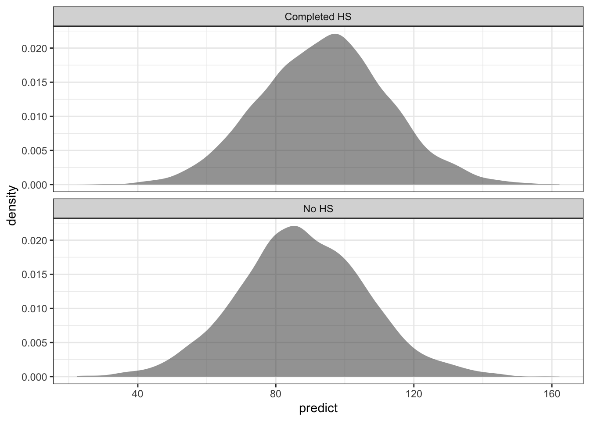

library(tidyverse)
library(ggformula)
library(broom)
library(broom.mixed)
library(performance)
library(modelsummary)
library(rstanarm)
library(loo)
library(tidybayes)
library(posterior)
library(bayesplot)
theme_set(theme_bw())
color_scheme_set(scheme = "brightblue")DataCamp: Bayesian Regression Modeling with rstanarm
Introduction to Bayesian Linear Models
A review of frequentist regression using lm(), an introduction to Bayesian regression using stan_glm(), and a comparison of the respective outputs.
Non-Bayesian/Frequentist linear regression
lm_model <- lm(kid_score ~ mom_iq, data = kidiq)summary(lm_model)
Call:
lm(formula = kid_score ~ mom_iq, data = kidiq)
Residuals:
Min 1Q Median 3Q Max
-56.75 -12.07 2.22 11.71 47.69
Coefficients:
Estimate Std. Error t value Pr(>|t|)
(Intercept) 25.7998 5.9174 4.36 0.000016 ***
mom_iq 0.6100 0.0585 10.42 < 0.0000000000000002 ***
---
Signif. codes: 0 '***' 0.001 '**' 0.01 '*' 0.05 '.' 0.1 ' ' 1
Residual standard error: 18.3 on 432 degrees of freedom
Multiple R-squared: 0.201, Adjusted R-squared: 0.199
F-statistic: 109 on 1 and 432 DF, p-value: <0.0000000000000002tidy(lm_model)# A tibble: 2 × 5
term estimate std.error statistic p.value
<chr> <dbl> <dbl> <dbl> <dbl>
1 (Intercept) 25.8 5.92 4.36 1.63e- 5
2 mom_iq 0.610 0.0585 10.4 7.66e-23Bayesian linear regression
stan_model <- stan_glm(kid_score ~ mom_iq, data = kidiq)
SAMPLING FOR MODEL 'continuous' NOW (CHAIN 1).
Chain 1:
Chain 1: Gradient evaluation took 2.6e-05 seconds
Chain 1: 1000 transitions using 10 leapfrog steps per transition would take 0.26 seconds.
Chain 1: Adjust your expectations accordingly!
Chain 1:
Chain 1:
Chain 1: Iteration: 1 / 2000 [ 0%] (Warmup)
Chain 1: Iteration: 200 / 2000 [ 10%] (Warmup)
Chain 1: Iteration: 400 / 2000 [ 20%] (Warmup)
Chain 1: Iteration: 600 / 2000 [ 30%] (Warmup)
Chain 1: Iteration: 800 / 2000 [ 40%] (Warmup)
Chain 1: Iteration: 1000 / 2000 [ 50%] (Warmup)
Chain 1: Iteration: 1001 / 2000 [ 50%] (Sampling)
Chain 1: Iteration: 1200 / 2000 [ 60%] (Sampling)
Chain 1: Iteration: 1400 / 2000 [ 70%] (Sampling)
Chain 1: Iteration: 1600 / 2000 [ 80%] (Sampling)
Chain 1: Iteration: 1800 / 2000 [ 90%] (Sampling)
Chain 1: Iteration: 2000 / 2000 [100%] (Sampling)
Chain 1:
Chain 1: Elapsed Time: 0.024 seconds (Warm-up)
Chain 1: 0.04 seconds (Sampling)
Chain 1: 0.064 seconds (Total)
Chain 1:
SAMPLING FOR MODEL 'continuous' NOW (CHAIN 2).
Chain 2:
Chain 2: Gradient evaluation took 6e-06 seconds
Chain 2: 1000 transitions using 10 leapfrog steps per transition would take 0.06 seconds.
Chain 2: Adjust your expectations accordingly!
Chain 2:
Chain 2:
Chain 2: Iteration: 1 / 2000 [ 0%] (Warmup)
Chain 2: Iteration: 200 / 2000 [ 10%] (Warmup)
Chain 2: Iteration: 400 / 2000 [ 20%] (Warmup)
Chain 2: Iteration: 600 / 2000 [ 30%] (Warmup)
Chain 2: Iteration: 800 / 2000 [ 40%] (Warmup)
Chain 2: Iteration: 1000 / 2000 [ 50%] (Warmup)
Chain 2: Iteration: 1001 / 2000 [ 50%] (Sampling)
Chain 2: Iteration: 1200 / 2000 [ 60%] (Sampling)
Chain 2: Iteration: 1400 / 2000 [ 70%] (Sampling)
Chain 2: Iteration: 1600 / 2000 [ 80%] (Sampling)
Chain 2: Iteration: 1800 / 2000 [ 90%] (Sampling)
Chain 2: Iteration: 2000 / 2000 [100%] (Sampling)
Chain 2:
Chain 2: Elapsed Time: 0.019 seconds (Warm-up)
Chain 2: 0.041 seconds (Sampling)
Chain 2: 0.06 seconds (Total)
Chain 2:
SAMPLING FOR MODEL 'continuous' NOW (CHAIN 3).
Chain 3:
Chain 3: Gradient evaluation took 5e-06 seconds
Chain 3: 1000 transitions using 10 leapfrog steps per transition would take 0.05 seconds.
Chain 3: Adjust your expectations accordingly!
Chain 3:
Chain 3:
Chain 3: Iteration: 1 / 2000 [ 0%] (Warmup)
Chain 3: Iteration: 200 / 2000 [ 10%] (Warmup)
Chain 3: Iteration: 400 / 2000 [ 20%] (Warmup)
Chain 3: Iteration: 600 / 2000 [ 30%] (Warmup)
Chain 3: Iteration: 800 / 2000 [ 40%] (Warmup)
Chain 3: Iteration: 1000 / 2000 [ 50%] (Warmup)
Chain 3: Iteration: 1001 / 2000 [ 50%] (Sampling)
Chain 3: Iteration: 1200 / 2000 [ 60%] (Sampling)
Chain 3: Iteration: 1400 / 2000 [ 70%] (Sampling)
Chain 3: Iteration: 1600 / 2000 [ 80%] (Sampling)
Chain 3: Iteration: 1800 / 2000 [ 90%] (Sampling)
Chain 3: Iteration: 2000 / 2000 [100%] (Sampling)
Chain 3:
Chain 3: Elapsed Time: 0.019 seconds (Warm-up)
Chain 3: 0.042 seconds (Sampling)
Chain 3: 0.061 seconds (Total)
Chain 3:
SAMPLING FOR MODEL 'continuous' NOW (CHAIN 4).
Chain 4:
Chain 4: Gradient evaluation took 4e-06 seconds
Chain 4: 1000 transitions using 10 leapfrog steps per transition would take 0.04 seconds.
Chain 4: Adjust your expectations accordingly!
Chain 4:
Chain 4:
Chain 4: Iteration: 1 / 2000 [ 0%] (Warmup)
Chain 4: Iteration: 200 / 2000 [ 10%] (Warmup)
Chain 4: Iteration: 400 / 2000 [ 20%] (Warmup)
Chain 4: Iteration: 600 / 2000 [ 30%] (Warmup)
Chain 4: Iteration: 800 / 2000 [ 40%] (Warmup)
Chain 4: Iteration: 1000 / 2000 [ 50%] (Warmup)
Chain 4: Iteration: 1001 / 2000 [ 50%] (Sampling)
Chain 4: Iteration: 1200 / 2000 [ 60%] (Sampling)
Chain 4: Iteration: 1400 / 2000 [ 70%] (Sampling)
Chain 4: Iteration: 1600 / 2000 [ 80%] (Sampling)
Chain 4: Iteration: 1800 / 2000 [ 90%] (Sampling)
Chain 4: Iteration: 2000 / 2000 [100%] (Sampling)
Chain 4:
Chain 4: Elapsed Time: 0.025 seconds (Warm-up)
Chain 4: 0.041 seconds (Sampling)
Chain 4: 0.066 seconds (Total)
Chain 4: summary(stan_model)
Model Info:
function: stan_glm
family: gaussian [identity]
formula: kid_score ~ mom_iq
algorithm: sampling
sample: 4000 (posterior sample size)
priors: see help('prior_summary')
observations: 434
predictors: 2
Estimates:
mean sd 10% 50% 90%
(Intercept) 25.9 5.8 18.6 26.1 33.2
mom_iq 0.6 0.1 0.5 0.6 0.7
sigma 18.3 0.6 17.5 18.3 19.1
Fit Diagnostics:
mean sd 10% 50% 90%
mean_PPD 86.8 1.2 85.2 86.8 88.4
The mean_ppd is the sample average posterior predictive distribution of the outcome variable (for details see help('summary.stanreg')).
MCMC diagnostics
mcse Rhat n_eff
(Intercept) 0.1 1.0 3450
mom_iq 0.0 1.0 3406
sigma 0.0 1.0 4224
mean_PPD 0.0 1.0 3924
log-posterior 0.0 1.0 1995
For each parameter, mcse is Monte Carlo standard error, n_eff is a crude measure of effective sample size, and Rhat is the potential scale reduction factor on split chains (at convergence Rhat=1).tidy(stan_model)# A tibble: 2 × 3
term estimate std.error
<chr> <dbl> <dbl>
1 (Intercept) 26.1 5.86
2 mom_iq 0.607 0.0572Assessing model convergence
sigma: the standard deviation of errorsmean_PPD: the mean of posterior predictive sampleslog-posterior: analogous to a likelihood (used for model comparison)rhat: a measure of within chain variance compared to across chain variance; values less than 1.1 indicate convergence
Comparing frequentist and Bayesian probabilities
What’s the probability a woman has cancer, given positive mammogram?
\(P(M^+ \mid C) = 0.9\) (likelihood, p-value)
\(P(C) = 0.004\) (prior)
\(P(M^+) = P(M^+ \mid C) + P(M^+ \mid \lnot C) = (0.9 \times 0.004) + (0.1 \times 0.994) = 0.1\)
What is \(P(C \mid M^+)\)?
- \(P(C \mid M^+) = \frac{P(C) \times P(M^+ \mid C)}{P(M^+)} = \frac{P(C) \times P(M^+ \mid C)}{P(M^+ \mid C) + P(M^+ \mid \lnot C)} = \frac{0.004 \times 0.9}{0.1} = 0.036\)
P-values make inferences about the probability of data, not parameter values
Posterior distribution: Combination of likelihood and prior
Sample the posterior distribution
Summarize the sample
Use the summary to make inferences about parameter values
Comparing frequentist and Bayesian inferences
- Frequentist inference: data are random, parameters are fixed; p-value = P(random data/sample/test statistic | null hypothesis/parameter = 0)
- Bayesian inference: data are fixed, parameters are random; posterior = P(parameter | observed data/sample)
- Use credible interval of posterior distribution to check if parameter is diff from zero (or any other hypothesis)
Frequentists believe data are random and assume parameters are fixed
Bayesians believe parameters are random and assume data are fixed
What’s a p-value?
- Probability of data (a random sample) [test statistic as large or larger than the observed one], given null hypothesis (parameter value)
So what do Bayesians want?
- Probability of parameter values, given the observed data (not a random sample)
# probability that true param value is in interval
posterior_interval(stan_model, prob = 0.95) 2.5% 97.5%
(Intercept) 14.3923 37.480
mom_iq 0.4973 0.723
sigma 17.1239 19.555# probability that interval contains true param value
confint(lm_model, level = 0.95) 2.5 % 97.5 %
(Intercept) 14.169 37.430
mom_iq 0.495 0.725posterior <- spread_draws(stan_model, mom_iq)
mean(between(posterior$mom_iq, 0.60, 0.65))[1] 0.3167Confidence interval: Frequency-type probability that the range contains the true parameter value
- There is a 89% probability that the range contains the true parameter value (as relative frequency in an infinite series of ranges)
Credible interval: Belief-type probability that the true parameter value is within the range
- There is a 89% probability that the true parameter value is within this range
Modifying a Bayesian Model
Learn how to modify your Bayesian model including changing the number and length of chains, changing prior distributions, and adding predictors.
Changing number and length of chains
Posterior distributions are sampled in groups called chains
Each sample in a chain is an iteration
Fewer iterations = shorter estimation time
Not enough iterations = convergence issues
stan_model <- stan_glm(kid_score ~ mom_iq, data = kidiq, chains = 2, iter = 1000, warmup = 500)
SAMPLING FOR MODEL 'continuous' NOW (CHAIN 1).
Chain 1:
Chain 1: Gradient evaluation took 1.6e-05 seconds
Chain 1: 1000 transitions using 10 leapfrog steps per transition would take 0.16 seconds.
Chain 1: Adjust your expectations accordingly!
Chain 1:
Chain 1:
Chain 1: Iteration: 1 / 1000 [ 0%] (Warmup)
Chain 1: Iteration: 100 / 1000 [ 10%] (Warmup)
Chain 1: Iteration: 200 / 1000 [ 20%] (Warmup)
Chain 1: Iteration: 300 / 1000 [ 30%] (Warmup)
Chain 1: Iteration: 400 / 1000 [ 40%] (Warmup)
Chain 1: Iteration: 500 / 1000 [ 50%] (Warmup)
Chain 1: Iteration: 501 / 1000 [ 50%] (Sampling)
Chain 1: Iteration: 600 / 1000 [ 60%] (Sampling)
Chain 1: Iteration: 700 / 1000 [ 70%] (Sampling)
Chain 1: Iteration: 800 / 1000 [ 80%] (Sampling)
Chain 1: Iteration: 900 / 1000 [ 90%] (Sampling)
Chain 1: Iteration: 1000 / 1000 [100%] (Sampling)
Chain 1:
Chain 1: Elapsed Time: 0.015 seconds (Warm-up)
Chain 1: 0.021 seconds (Sampling)
Chain 1: 0.036 seconds (Total)
Chain 1:
SAMPLING FOR MODEL 'continuous' NOW (CHAIN 2).
Chain 2:
Chain 2: Gradient evaluation took 4e-06 seconds
Chain 2: 1000 transitions using 10 leapfrog steps per transition would take 0.04 seconds.
Chain 2: Adjust your expectations accordingly!
Chain 2:
Chain 2:
Chain 2: Iteration: 1 / 1000 [ 0%] (Warmup)
Chain 2: Iteration: 100 / 1000 [ 10%] (Warmup)
Chain 2: Iteration: 200 / 1000 [ 20%] (Warmup)
Chain 2: Iteration: 300 / 1000 [ 30%] (Warmup)
Chain 2: Iteration: 400 / 1000 [ 40%] (Warmup)
Chain 2: Iteration: 500 / 1000 [ 50%] (Warmup)
Chain 2: Iteration: 501 / 1000 [ 50%] (Sampling)
Chain 2: Iteration: 600 / 1000 [ 60%] (Sampling)
Chain 2: Iteration: 700 / 1000 [ 70%] (Sampling)
Chain 2: Iteration: 800 / 1000 [ 80%] (Sampling)
Chain 2: Iteration: 900 / 1000 [ 90%] (Sampling)
Chain 2: Iteration: 1000 / 1000 [100%] (Sampling)
Chain 2:
Chain 2: Elapsed Time: 0.012 seconds (Warm-up)
Chain 2: 0.02 seconds (Sampling)
Chain 2: 0.032 seconds (Total)
Chain 2: summary(stan_model)
Model Info:
function: stan_glm
family: gaussian [identity]
formula: kid_score ~ mom_iq
algorithm: sampling
sample: 1000 (posterior sample size)
priors: see help('prior_summary')
observations: 434
predictors: 2
Estimates:
mean sd 10% 50% 90%
(Intercept) 25.6 5.5 18.9 25.7 32.6
mom_iq 0.6 0.1 0.5 0.6 0.7
sigma 18.3 0.6 17.6 18.3 19.1
Fit Diagnostics:
mean sd 10% 50% 90%
mean_PPD 86.8 1.2 85.3 86.8 88.3
The mean_ppd is the sample average posterior predictive distribution of the outcome variable (for details see help('summary.stanreg')).
MCMC diagnostics
mcse Rhat n_eff
(Intercept) 0.2 1.0 1032
mom_iq 0.0 1.0 1018
sigma 0.0 1.0 748
mean_PPD 0.0 1.0 1006
log-posterior 0.1 1.0 490
For each parameter, mcse is Monte Carlo standard error, n_eff is a crude measure of effective sample size, and Rhat is the potential scale reduction factor on split chains (at convergence Rhat=1).Changing prior distributions
Background information that we bring to the model
Likelihood + prior = posterior
Why change the default prior?
Good reason to believe the parameter will take a given value
Constraints on parameter

prior_summary(stan_model)Priors for model 'stan_model'
------
Intercept (after predictors centered)
Specified prior:
~ normal(location = 87, scale = 2.5)
Adjusted prior:
~ normal(location = 87, scale = 51)
Coefficients
Specified prior:
~ normal(location = 0, scale = 2.5)
Adjusted prior:
~ normal(location = 0, scale = 3.4)
Auxiliary (sigma)
Specified prior:
~ exponential(rate = 1)
Adjusted prior:
~ exponential(rate = 0.049)
------
See help('prior_summary.stanreg') for more detailsAdjusted scale is 2.5 * sd(y) for the intercept, and 2.5 * sd(y)/sd(x) for the coefficients:
2.5 * sd(kidiq$kid_score) # intercept[1] 51.032.5 * sd(kidiq$kid_score) / sd(kidiq$mom_iq) # coefficient[1] 3.402Auto-scale can be turned off:
# n.b.: autoscale = FALSE is the default when manually specifying priors
stan_model <- stan_glm(kid_score ~ mom_iq, data = kidiq,
prior_intercept = normal(),
prior = normal(),
prior_aux = exponential())
SAMPLING FOR MODEL 'continuous' NOW (CHAIN 1).
Chain 1:
Chain 1: Gradient evaluation took 8e-06 seconds
Chain 1: 1000 transitions using 10 leapfrog steps per transition would take 0.08 seconds.
Chain 1: Adjust your expectations accordingly!
Chain 1:
Chain 1:
Chain 1: Iteration: 1 / 2000 [ 0%] (Warmup)
Chain 1: Iteration: 200 / 2000 [ 10%] (Warmup)
Chain 1: Iteration: 400 / 2000 [ 20%] (Warmup)
Chain 1: Iteration: 600 / 2000 [ 30%] (Warmup)
Chain 1: Iteration: 800 / 2000 [ 40%] (Warmup)
Chain 1: Iteration: 1000 / 2000 [ 50%] (Warmup)
Chain 1: Iteration: 1001 / 2000 [ 50%] (Sampling)
Chain 1: Iteration: 1200 / 2000 [ 60%] (Sampling)
Chain 1: Iteration: 1400 / 2000 [ 70%] (Sampling)
Chain 1: Iteration: 1600 / 2000 [ 80%] (Sampling)
Chain 1: Iteration: 1800 / 2000 [ 90%] (Sampling)
Chain 1: Iteration: 2000 / 2000 [100%] (Sampling)
Chain 1:
Chain 1: Elapsed Time: 0.026 seconds (Warm-up)
Chain 1: 0.047 seconds (Sampling)
Chain 1: 0.073 seconds (Total)
Chain 1:
SAMPLING FOR MODEL 'continuous' NOW (CHAIN 2).
Chain 2:
Chain 2: Gradient evaluation took 4e-06 seconds
Chain 2: 1000 transitions using 10 leapfrog steps per transition would take 0.04 seconds.
Chain 2: Adjust your expectations accordingly!
Chain 2:
Chain 2:
Chain 2: Iteration: 1 / 2000 [ 0%] (Warmup)
Chain 2: Iteration: 200 / 2000 [ 10%] (Warmup)
Chain 2: Iteration: 400 / 2000 [ 20%] (Warmup)
Chain 2: Iteration: 600 / 2000 [ 30%] (Warmup)
Chain 2: Iteration: 800 / 2000 [ 40%] (Warmup)
Chain 2: Iteration: 1000 / 2000 [ 50%] (Warmup)
Chain 2: Iteration: 1001 / 2000 [ 50%] (Sampling)
Chain 2: Iteration: 1200 / 2000 [ 60%] (Sampling)
Chain 2: Iteration: 1400 / 2000 [ 70%] (Sampling)
Chain 2: Iteration: 1600 / 2000 [ 80%] (Sampling)
Chain 2: Iteration: 1800 / 2000 [ 90%] (Sampling)
Chain 2: Iteration: 2000 / 2000 [100%] (Sampling)
Chain 2:
Chain 2: Elapsed Time: 0.025 seconds (Warm-up)
Chain 2: 0.049 seconds (Sampling)
Chain 2: 0.074 seconds (Total)
Chain 2:
SAMPLING FOR MODEL 'continuous' NOW (CHAIN 3).
Chain 3:
Chain 3: Gradient evaluation took 7e-06 seconds
Chain 3: 1000 transitions using 10 leapfrog steps per transition would take 0.07 seconds.
Chain 3: Adjust your expectations accordingly!
Chain 3:
Chain 3:
Chain 3: Iteration: 1 / 2000 [ 0%] (Warmup)
Chain 3: Iteration: 200 / 2000 [ 10%] (Warmup)
Chain 3: Iteration: 400 / 2000 [ 20%] (Warmup)
Chain 3: Iteration: 600 / 2000 [ 30%] (Warmup)
Chain 3: Iteration: 800 / 2000 [ 40%] (Warmup)
Chain 3: Iteration: 1000 / 2000 [ 50%] (Warmup)
Chain 3: Iteration: 1001 / 2000 [ 50%] (Sampling)
Chain 3: Iteration: 1200 / 2000 [ 60%] (Sampling)
Chain 3: Iteration: 1400 / 2000 [ 70%] (Sampling)
Chain 3: Iteration: 1600 / 2000 [ 80%] (Sampling)
Chain 3: Iteration: 1800 / 2000 [ 90%] (Sampling)
Chain 3: Iteration: 2000 / 2000 [100%] (Sampling)
Chain 3:
Chain 3: Elapsed Time: 0.024 seconds (Warm-up)
Chain 3: 0.049 seconds (Sampling)
Chain 3: 0.073 seconds (Total)
Chain 3:
SAMPLING FOR MODEL 'continuous' NOW (CHAIN 4).
Chain 4:
Chain 4: Gradient evaluation took 4e-06 seconds
Chain 4: 1000 transitions using 10 leapfrog steps per transition would take 0.04 seconds.
Chain 4: Adjust your expectations accordingly!
Chain 4:
Chain 4:
Chain 4: Iteration: 1 / 2000 [ 0%] (Warmup)
Chain 4: Iteration: 200 / 2000 [ 10%] (Warmup)
Chain 4: Iteration: 400 / 2000 [ 20%] (Warmup)
Chain 4: Iteration: 600 / 2000 [ 30%] (Warmup)
Chain 4: Iteration: 800 / 2000 [ 40%] (Warmup)
Chain 4: Iteration: 1000 / 2000 [ 50%] (Warmup)
Chain 4: Iteration: 1001 / 2000 [ 50%] (Sampling)
Chain 4: Iteration: 1200 / 2000 [ 60%] (Sampling)
Chain 4: Iteration: 1400 / 2000 [ 70%] (Sampling)
Chain 4: Iteration: 1600 / 2000 [ 80%] (Sampling)
Chain 4: Iteration: 1800 / 2000 [ 90%] (Sampling)
Chain 4: Iteration: 2000 / 2000 [100%] (Sampling)
Chain 4:
Chain 4: Elapsed Time: 0.026 seconds (Warm-up)
Chain 4: 0.051 seconds (Sampling)
Chain 4: 0.077 seconds (Total)
Chain 4: prior_summary(stan_model)Priors for model 'stan_model'
------
Intercept (after predictors centered)
~ normal(location = 0, scale = 2.5)
Coefficients
~ normal(location = 0, scale = 2.5)
Auxiliary (sigma)
~ exponential(rate = 1)
------
See help('prior_summary.stanreg') for more detailsstan_model <- stan_glm(kid_score ~ mom_iq, data = kidiq,
prior_intercept = normal(location = 3, scale = 2),
prior = cauchy(location = 0, scale = 1))
SAMPLING FOR MODEL 'continuous' NOW (CHAIN 1).
Chain 1:
Chain 1: Gradient evaluation took 1.9e-05 seconds
Chain 1: 1000 transitions using 10 leapfrog steps per transition would take 0.19 seconds.
Chain 1: Adjust your expectations accordingly!
Chain 1:
Chain 1:
Chain 1: Iteration: 1 / 2000 [ 0%] (Warmup)
Chain 1: Iteration: 200 / 2000 [ 10%] (Warmup)
Chain 1: Iteration: 400 / 2000 [ 20%] (Warmup)
Chain 1: Iteration: 600 / 2000 [ 30%] (Warmup)
Chain 1: Iteration: 800 / 2000 [ 40%] (Warmup)
Chain 1: Iteration: 1000 / 2000 [ 50%] (Warmup)
Chain 1: Iteration: 1001 / 2000 [ 50%] (Sampling)
Chain 1: Iteration: 1200 / 2000 [ 60%] (Sampling)
Chain 1: Iteration: 1400 / 2000 [ 70%] (Sampling)
Chain 1: Iteration: 1600 / 2000 [ 80%] (Sampling)
Chain 1: Iteration: 1800 / 2000 [ 90%] (Sampling)
Chain 1: Iteration: 2000 / 2000 [100%] (Sampling)
Chain 1:
Chain 1: Elapsed Time: 0.035 seconds (Warm-up)
Chain 1: 0.052 seconds (Sampling)
Chain 1: 0.087 seconds (Total)
Chain 1:
SAMPLING FOR MODEL 'continuous' NOW (CHAIN 2).
Chain 2:
Chain 2: Gradient evaluation took 1e-05 seconds
Chain 2: 1000 transitions using 10 leapfrog steps per transition would take 0.1 seconds.
Chain 2: Adjust your expectations accordingly!
Chain 2:
Chain 2:
Chain 2: Iteration: 1 / 2000 [ 0%] (Warmup)
Chain 2: Iteration: 200 / 2000 [ 10%] (Warmup)
Chain 2: Iteration: 400 / 2000 [ 20%] (Warmup)
Chain 2: Iteration: 600 / 2000 [ 30%] (Warmup)
Chain 2: Iteration: 800 / 2000 [ 40%] (Warmup)
Chain 2: Iteration: 1000 / 2000 [ 50%] (Warmup)
Chain 2: Iteration: 1001 / 2000 [ 50%] (Sampling)
Chain 2: Iteration: 1200 / 2000 [ 60%] (Sampling)
Chain 2: Iteration: 1400 / 2000 [ 70%] (Sampling)
Chain 2: Iteration: 1600 / 2000 [ 80%] (Sampling)
Chain 2: Iteration: 1800 / 2000 [ 90%] (Sampling)
Chain 2: Iteration: 2000 / 2000 [100%] (Sampling)
Chain 2:
Chain 2: Elapsed Time: 0.036 seconds (Warm-up)
Chain 2: 0.052 seconds (Sampling)
Chain 2: 0.088 seconds (Total)
Chain 2:
SAMPLING FOR MODEL 'continuous' NOW (CHAIN 3).
Chain 3:
Chain 3: Gradient evaluation took 4e-06 seconds
Chain 3: 1000 transitions using 10 leapfrog steps per transition would take 0.04 seconds.
Chain 3: Adjust your expectations accordingly!
Chain 3:
Chain 3:
Chain 3: Iteration: 1 / 2000 [ 0%] (Warmup)
Chain 3: Iteration: 200 / 2000 [ 10%] (Warmup)
Chain 3: Iteration: 400 / 2000 [ 20%] (Warmup)
Chain 3: Iteration: 600 / 2000 [ 30%] (Warmup)
Chain 3: Iteration: 800 / 2000 [ 40%] (Warmup)
Chain 3: Iteration: 1000 / 2000 [ 50%] (Warmup)
Chain 3: Iteration: 1001 / 2000 [ 50%] (Sampling)
Chain 3: Iteration: 1200 / 2000 [ 60%] (Sampling)
Chain 3: Iteration: 1400 / 2000 [ 70%] (Sampling)
Chain 3: Iteration: 1600 / 2000 [ 80%] (Sampling)
Chain 3: Iteration: 1800 / 2000 [ 90%] (Sampling)
Chain 3: Iteration: 2000 / 2000 [100%] (Sampling)
Chain 3:
Chain 3: Elapsed Time: 0.039 seconds (Warm-up)
Chain 3: 0.051 seconds (Sampling)
Chain 3: 0.09 seconds (Total)
Chain 3:
SAMPLING FOR MODEL 'continuous' NOW (CHAIN 4).
Chain 4:
Chain 4: Gradient evaluation took 5e-06 seconds
Chain 4: 1000 transitions using 10 leapfrog steps per transition would take 0.05 seconds.
Chain 4: Adjust your expectations accordingly!
Chain 4:
Chain 4:
Chain 4: Iteration: 1 / 2000 [ 0%] (Warmup)
Chain 4: Iteration: 200 / 2000 [ 10%] (Warmup)
Chain 4: Iteration: 400 / 2000 [ 20%] (Warmup)
Chain 4: Iteration: 600 / 2000 [ 30%] (Warmup)
Chain 4: Iteration: 800 / 2000 [ 40%] (Warmup)
Chain 4: Iteration: 1000 / 2000 [ 50%] (Warmup)
Chain 4: Iteration: 1001 / 2000 [ 50%] (Sampling)
Chain 4: Iteration: 1200 / 2000 [ 60%] (Sampling)
Chain 4: Iteration: 1400 / 2000 [ 70%] (Sampling)
Chain 4: Iteration: 1600 / 2000 [ 80%] (Sampling)
Chain 4: Iteration: 1800 / 2000 [ 90%] (Sampling)
Chain 4: Iteration: 2000 / 2000 [100%] (Sampling)
Chain 4:
Chain 4: Elapsed Time: 0.037 seconds (Warm-up)
Chain 4: 0.051 seconds (Sampling)
Chain 4: 0.088 seconds (Total)
Chain 4: prior_summary(stan_model)Priors for model 'stan_model'
------
Intercept (after predictors centered)
~ normal(location = 3, scale = 2)
Coefficients
~ cauchy(location = 0, scale = 1)
Auxiliary (sigma)
Specified prior:
~ exponential(rate = 1)
Adjusted prior:
~ exponential(rate = 0.049)
------
See help('prior_summary.stanreg') for more detailsA prior distribution should reflect that expected distribution of the parameter it is applied to!
A prior can be seen as having more data in addition to the observed ones; specifying a highly informative prior is like having a lot of additional data, therefore if we don’t have a lot of observed data, it can strongly influence the posterior!
Flat priors:
stan_model <- stan_glm(kid_score ~ mom_iq, data = kidiq,
prior_intercept = NULL,
prior = NULL,
prior_aux = NULL)
SAMPLING FOR MODEL 'continuous' NOW (CHAIN 1).
Chain 1:
Chain 1: Gradient evaluation took 9e-06 seconds
Chain 1: 1000 transitions using 10 leapfrog steps per transition would take 0.09 seconds.
Chain 1: Adjust your expectations accordingly!
Chain 1:
Chain 1:
Chain 1: Iteration: 1 / 2000 [ 0%] (Warmup)
Chain 1: Iteration: 200 / 2000 [ 10%] (Warmup)
Chain 1: Iteration: 400 / 2000 [ 20%] (Warmup)
Chain 1: Iteration: 600 / 2000 [ 30%] (Warmup)
Chain 1: Iteration: 800 / 2000 [ 40%] (Warmup)
Chain 1: Iteration: 1000 / 2000 [ 50%] (Warmup)
Chain 1: Iteration: 1001 / 2000 [ 50%] (Sampling)
Chain 1: Iteration: 1200 / 2000 [ 60%] (Sampling)
Chain 1: Iteration: 1400 / 2000 [ 70%] (Sampling)
Chain 1: Iteration: 1600 / 2000 [ 80%] (Sampling)
Chain 1: Iteration: 1800 / 2000 [ 90%] (Sampling)
Chain 1: Iteration: 2000 / 2000 [100%] (Sampling)
Chain 1:
Chain 1: Elapsed Time: 0.017 seconds (Warm-up)
Chain 1: 0.04 seconds (Sampling)
Chain 1: 0.057 seconds (Total)
Chain 1:
SAMPLING FOR MODEL 'continuous' NOW (CHAIN 2).
Chain 2:
Chain 2: Gradient evaluation took 4e-06 seconds
Chain 2: 1000 transitions using 10 leapfrog steps per transition would take 0.04 seconds.
Chain 2: Adjust your expectations accordingly!
Chain 2:
Chain 2:
Chain 2: Iteration: 1 / 2000 [ 0%] (Warmup)
Chain 2: Iteration: 200 / 2000 [ 10%] (Warmup)
Chain 2: Iteration: 400 / 2000 [ 20%] (Warmup)
Chain 2: Iteration: 600 / 2000 [ 30%] (Warmup)
Chain 2: Iteration: 800 / 2000 [ 40%] (Warmup)
Chain 2: Iteration: 1000 / 2000 [ 50%] (Warmup)
Chain 2: Iteration: 1001 / 2000 [ 50%] (Sampling)
Chain 2: Iteration: 1200 / 2000 [ 60%] (Sampling)
Chain 2: Iteration: 1400 / 2000 [ 70%] (Sampling)
Chain 2: Iteration: 1600 / 2000 [ 80%] (Sampling)
Chain 2: Iteration: 1800 / 2000 [ 90%] (Sampling)
Chain 2: Iteration: 2000 / 2000 [100%] (Sampling)
Chain 2:
Chain 2: Elapsed Time: 0.02 seconds (Warm-up)
Chain 2: 0.04 seconds (Sampling)
Chain 2: 0.06 seconds (Total)
Chain 2:
SAMPLING FOR MODEL 'continuous' NOW (CHAIN 3).
Chain 3:
Chain 3: Gradient evaluation took 2e-06 seconds
Chain 3: 1000 transitions using 10 leapfrog steps per transition would take 0.02 seconds.
Chain 3: Adjust your expectations accordingly!
Chain 3:
Chain 3:
Chain 3: Iteration: 1 / 2000 [ 0%] (Warmup)
Chain 3: Iteration: 200 / 2000 [ 10%] (Warmup)
Chain 3: Iteration: 400 / 2000 [ 20%] (Warmup)
Chain 3: Iteration: 600 / 2000 [ 30%] (Warmup)
Chain 3: Iteration: 800 / 2000 [ 40%] (Warmup)
Chain 3: Iteration: 1000 / 2000 [ 50%] (Warmup)
Chain 3: Iteration: 1001 / 2000 [ 50%] (Sampling)
Chain 3: Iteration: 1200 / 2000 [ 60%] (Sampling)
Chain 3: Iteration: 1400 / 2000 [ 70%] (Sampling)
Chain 3: Iteration: 1600 / 2000 [ 80%] (Sampling)
Chain 3: Iteration: 1800 / 2000 [ 90%] (Sampling)
Chain 3: Iteration: 2000 / 2000 [100%] (Sampling)
Chain 3:
Chain 3: Elapsed Time: 0.017 seconds (Warm-up)
Chain 3: 0.038 seconds (Sampling)
Chain 3: 0.055 seconds (Total)
Chain 3:
SAMPLING FOR MODEL 'continuous' NOW (CHAIN 4).
Chain 4:
Chain 4: Gradient evaluation took 2e-06 seconds
Chain 4: 1000 transitions using 10 leapfrog steps per transition would take 0.02 seconds.
Chain 4: Adjust your expectations accordingly!
Chain 4:
Chain 4:
Chain 4: Iteration: 1 / 2000 [ 0%] (Warmup)
Chain 4: Iteration: 200 / 2000 [ 10%] (Warmup)
Chain 4: Iteration: 400 / 2000 [ 20%] (Warmup)
Chain 4: Iteration: 600 / 2000 [ 30%] (Warmup)
Chain 4: Iteration: 800 / 2000 [ 40%] (Warmup)
Chain 4: Iteration: 1000 / 2000 [ 50%] (Warmup)
Chain 4: Iteration: 1001 / 2000 [ 50%] (Sampling)
Chain 4: Iteration: 1200 / 2000 [ 60%] (Sampling)
Chain 4: Iteration: 1400 / 2000 [ 70%] (Sampling)
Chain 4: Iteration: 1600 / 2000 [ 80%] (Sampling)
Chain 4: Iteration: 1800 / 2000 [ 90%] (Sampling)
Chain 4: Iteration: 2000 / 2000 [100%] (Sampling)
Chain 4:
Chain 4: Elapsed Time: 0.018 seconds (Warm-up)
Chain 4: 0.038 seconds (Sampling)
Chain 4: 0.056 seconds (Total)
Chain 4: prior_summary(stan_model)Priors for model 'stan_model'
------
Intercept (after predictors centered)
~ flat
Coefficients
~ flat
Auxiliary (sigma)
~ flat
------
See help('prior_summary.stanreg') for more detailsmodelsummary(list("frequentist" = lm_model, "bayesian" = stan_model))Warning:
`modelsummary` uses the `performance` package to extract goodness-of-fit
statistics from models of this class. You can specify the statistics you wish
to compute by supplying a `metrics` argument to `modelsummary`, which will then
push it forward to `performance`. Acceptable values are: "all", "common",
"none", or a character vector of metrics names. For example: `modelsummary(mod,
metrics = c("RMSE", "R2")` Note that some metrics are computationally
expensive. See `?performance::performance` for details.
This warning appears once per session.| frequentist | bayesian | |
|---|---|---|
| (Intercept) | 25.800 | 25.785 |
| (5.917) | ||
| mom_iq | 0.610 | 0.610 |
| (0.059) | ||
| Num.Obs. | 434 | 434 |
| R2 | 0.201 | 0.200 |
| R2 Adj. | 0.199 | 0.196 |
| AIC | 3757.2 | |
| BIC | 3769.4 | |
| Log.Lik. | −1875.608 | −1876.340 |
| F | 108.643 | |
| ELPD | −1878.5 | |
| ELPD s.e. | 14.5 | |
| LOOIC | 3757.0 | |
| LOOIC s.e. | 28.9 | |
| WAIC | 3757.0 | |
| RMSE | 18.22 | 18.22 |
Altering the estimation process
Estimation errors (like non-convergence) are threats to the validity of the parameter estimates
Divergent transitions:
stan_model <- stan_glm(kid_score ~ mom_iq, data = kidiq,
control = list(adapt_delta = 0.99)) # increase from 0.95 default
SAMPLING FOR MODEL 'continuous' NOW (CHAIN 1).
Chain 1:
Chain 1: Gradient evaluation took 1.3e-05 seconds
Chain 1: 1000 transitions using 10 leapfrog steps per transition would take 0.13 seconds.
Chain 1: Adjust your expectations accordingly!
Chain 1:
Chain 1:
Chain 1: Iteration: 1 / 2000 [ 0%] (Warmup)
Chain 1: Iteration: 200 / 2000 [ 10%] (Warmup)
Chain 1: Iteration: 400 / 2000 [ 20%] (Warmup)
Chain 1: Iteration: 600 / 2000 [ 30%] (Warmup)
Chain 1: Iteration: 800 / 2000 [ 40%] (Warmup)
Chain 1: Iteration: 1000 / 2000 [ 50%] (Warmup)
Chain 1: Iteration: 1001 / 2000 [ 50%] (Sampling)
Chain 1: Iteration: 1200 / 2000 [ 60%] (Sampling)
Chain 1: Iteration: 1400 / 2000 [ 70%] (Sampling)
Chain 1: Iteration: 1600 / 2000 [ 80%] (Sampling)
Chain 1: Iteration: 1800 / 2000 [ 90%] (Sampling)
Chain 1: Iteration: 2000 / 2000 [100%] (Sampling)
Chain 1:
Chain 1: Elapsed Time: 0.02 seconds (Warm-up)
Chain 1: 0.041 seconds (Sampling)
Chain 1: 0.061 seconds (Total)
Chain 1:
SAMPLING FOR MODEL 'continuous' NOW (CHAIN 2).
Chain 2:
Chain 2: Gradient evaluation took 5e-06 seconds
Chain 2: 1000 transitions using 10 leapfrog steps per transition would take 0.05 seconds.
Chain 2: Adjust your expectations accordingly!
Chain 2:
Chain 2:
Chain 2: Iteration: 1 / 2000 [ 0%] (Warmup)
Chain 2: Iteration: 200 / 2000 [ 10%] (Warmup)
Chain 2: Iteration: 400 / 2000 [ 20%] (Warmup)
Chain 2: Iteration: 600 / 2000 [ 30%] (Warmup)
Chain 2: Iteration: 800 / 2000 [ 40%] (Warmup)
Chain 2: Iteration: 1000 / 2000 [ 50%] (Warmup)
Chain 2: Iteration: 1001 / 2000 [ 50%] (Sampling)
Chain 2: Iteration: 1200 / 2000 [ 60%] (Sampling)
Chain 2: Iteration: 1400 / 2000 [ 70%] (Sampling)
Chain 2: Iteration: 1600 / 2000 [ 80%] (Sampling)
Chain 2: Iteration: 1800 / 2000 [ 90%] (Sampling)
Chain 2: Iteration: 2000 / 2000 [100%] (Sampling)
Chain 2:
Chain 2: Elapsed Time: 0.018 seconds (Warm-up)
Chain 2: 0.04 seconds (Sampling)
Chain 2: 0.058 seconds (Total)
Chain 2:
SAMPLING FOR MODEL 'continuous' NOW (CHAIN 3).
Chain 3:
Chain 3: Gradient evaluation took 3e-06 seconds
Chain 3: 1000 transitions using 10 leapfrog steps per transition would take 0.03 seconds.
Chain 3: Adjust your expectations accordingly!
Chain 3:
Chain 3:
Chain 3: Iteration: 1 / 2000 [ 0%] (Warmup)
Chain 3: Iteration: 200 / 2000 [ 10%] (Warmup)
Chain 3: Iteration: 400 / 2000 [ 20%] (Warmup)
Chain 3: Iteration: 600 / 2000 [ 30%] (Warmup)
Chain 3: Iteration: 800 / 2000 [ 40%] (Warmup)
Chain 3: Iteration: 1000 / 2000 [ 50%] (Warmup)
Chain 3: Iteration: 1001 / 2000 [ 50%] (Sampling)
Chain 3: Iteration: 1200 / 2000 [ 60%] (Sampling)
Chain 3: Iteration: 1400 / 2000 [ 70%] (Sampling)
Chain 3: Iteration: 1600 / 2000 [ 80%] (Sampling)
Chain 3: Iteration: 1800 / 2000 [ 90%] (Sampling)
Chain 3: Iteration: 2000 / 2000 [100%] (Sampling)
Chain 3:
Chain 3: Elapsed Time: 0.018 seconds (Warm-up)
Chain 3: 0.041 seconds (Sampling)
Chain 3: 0.059 seconds (Total)
Chain 3:
SAMPLING FOR MODEL 'continuous' NOW (CHAIN 4).
Chain 4:
Chain 4: Gradient evaluation took 6e-06 seconds
Chain 4: 1000 transitions using 10 leapfrog steps per transition would take 0.06 seconds.
Chain 4: Adjust your expectations accordingly!
Chain 4:
Chain 4:
Chain 4: Iteration: 1 / 2000 [ 0%] (Warmup)
Chain 4: Iteration: 200 / 2000 [ 10%] (Warmup)
Chain 4: Iteration: 400 / 2000 [ 20%] (Warmup)
Chain 4: Iteration: 600 / 2000 [ 30%] (Warmup)
Chain 4: Iteration: 800 / 2000 [ 40%] (Warmup)
Chain 4: Iteration: 1000 / 2000 [ 50%] (Warmup)
Chain 4: Iteration: 1001 / 2000 [ 50%] (Sampling)
Chain 4: Iteration: 1200 / 2000 [ 60%] (Sampling)
Chain 4: Iteration: 1400 / 2000 [ 70%] (Sampling)
Chain 4: Iteration: 1600 / 2000 [ 80%] (Sampling)
Chain 4: Iteration: 1800 / 2000 [ 90%] (Sampling)
Chain 4: Iteration: 2000 / 2000 [100%] (Sampling)
Chain 4:
Chain 4: Elapsed Time: 0.018 seconds (Warm-up)
Chain 4: 0.041 seconds (Sampling)
Chain 4: 0.059 seconds (Total)
Chain 4: Exceeding the max treedepth:
stan_model <- stan_glm(kid_score ~ mom_iq, data = kidiq,
control = list(max_treedepth = 15)) # increase from 10 default
SAMPLING FOR MODEL 'continuous' NOW (CHAIN 1).
Chain 1:
Chain 1: Gradient evaluation took 1.2e-05 seconds
Chain 1: 1000 transitions using 10 leapfrog steps per transition would take 0.12 seconds.
Chain 1: Adjust your expectations accordingly!
Chain 1:
Chain 1:
Chain 1: Iteration: 1 / 2000 [ 0%] (Warmup)
Chain 1: Iteration: 200 / 2000 [ 10%] (Warmup)
Chain 1: Iteration: 400 / 2000 [ 20%] (Warmup)
Chain 1: Iteration: 600 / 2000 [ 30%] (Warmup)
Chain 1: Iteration: 800 / 2000 [ 40%] (Warmup)
Chain 1: Iteration: 1000 / 2000 [ 50%] (Warmup)
Chain 1: Iteration: 1001 / 2000 [ 50%] (Sampling)
Chain 1: Iteration: 1200 / 2000 [ 60%] (Sampling)
Chain 1: Iteration: 1400 / 2000 [ 70%] (Sampling)
Chain 1: Iteration: 1600 / 2000 [ 80%] (Sampling)
Chain 1: Iteration: 1800 / 2000 [ 90%] (Sampling)
Chain 1: Iteration: 2000 / 2000 [100%] (Sampling)
Chain 1:
Chain 1: Elapsed Time: 0.019 seconds (Warm-up)
Chain 1: 0.041 seconds (Sampling)
Chain 1: 0.06 seconds (Total)
Chain 1:
SAMPLING FOR MODEL 'continuous' NOW (CHAIN 2).
Chain 2:
Chain 2: Gradient evaluation took 6e-06 seconds
Chain 2: 1000 transitions using 10 leapfrog steps per transition would take 0.06 seconds.
Chain 2: Adjust your expectations accordingly!
Chain 2:
Chain 2:
Chain 2: Iteration: 1 / 2000 [ 0%] (Warmup)
Chain 2: Iteration: 200 / 2000 [ 10%] (Warmup)
Chain 2: Iteration: 400 / 2000 [ 20%] (Warmup)
Chain 2: Iteration: 600 / 2000 [ 30%] (Warmup)
Chain 2: Iteration: 800 / 2000 [ 40%] (Warmup)
Chain 2: Iteration: 1000 / 2000 [ 50%] (Warmup)
Chain 2: Iteration: 1001 / 2000 [ 50%] (Sampling)
Chain 2: Iteration: 1200 / 2000 [ 60%] (Sampling)
Chain 2: Iteration: 1400 / 2000 [ 70%] (Sampling)
Chain 2: Iteration: 1600 / 2000 [ 80%] (Sampling)
Chain 2: Iteration: 1800 / 2000 [ 90%] (Sampling)
Chain 2: Iteration: 2000 / 2000 [100%] (Sampling)
Chain 2:
Chain 2: Elapsed Time: 0.02 seconds (Warm-up)
Chain 2: 0.041 seconds (Sampling)
Chain 2: 0.061 seconds (Total)
Chain 2:
SAMPLING FOR MODEL 'continuous' NOW (CHAIN 3).
Chain 3:
Chain 3: Gradient evaluation took 3e-06 seconds
Chain 3: 1000 transitions using 10 leapfrog steps per transition would take 0.03 seconds.
Chain 3: Adjust your expectations accordingly!
Chain 3:
Chain 3:
Chain 3: Iteration: 1 / 2000 [ 0%] (Warmup)
Chain 3: Iteration: 200 / 2000 [ 10%] (Warmup)
Chain 3: Iteration: 400 / 2000 [ 20%] (Warmup)
Chain 3: Iteration: 600 / 2000 [ 30%] (Warmup)
Chain 3: Iteration: 800 / 2000 [ 40%] (Warmup)
Chain 3: Iteration: 1000 / 2000 [ 50%] (Warmup)
Chain 3: Iteration: 1001 / 2000 [ 50%] (Sampling)
Chain 3: Iteration: 1200 / 2000 [ 60%] (Sampling)
Chain 3: Iteration: 1400 / 2000 [ 70%] (Sampling)
Chain 3: Iteration: 1600 / 2000 [ 80%] (Sampling)
Chain 3: Iteration: 1800 / 2000 [ 90%] (Sampling)
Chain 3: Iteration: 2000 / 2000 [100%] (Sampling)
Chain 3:
Chain 3: Elapsed Time: 0.02 seconds (Warm-up)
Chain 3: 0.041 seconds (Sampling)
Chain 3: 0.061 seconds (Total)
Chain 3:
SAMPLING FOR MODEL 'continuous' NOW (CHAIN 4).
Chain 4:
Chain 4: Gradient evaluation took 3e-06 seconds
Chain 4: 1000 transitions using 10 leapfrog steps per transition would take 0.03 seconds.
Chain 4: Adjust your expectations accordingly!
Chain 4:
Chain 4:
Chain 4: Iteration: 1 / 2000 [ 0%] (Warmup)
Chain 4: Iteration: 200 / 2000 [ 10%] (Warmup)
Chain 4: Iteration: 400 / 2000 [ 20%] (Warmup)
Chain 4: Iteration: 600 / 2000 [ 30%] (Warmup)
Chain 4: Iteration: 800 / 2000 [ 40%] (Warmup)
Chain 4: Iteration: 1000 / 2000 [ 50%] (Warmup)
Chain 4: Iteration: 1001 / 2000 [ 50%] (Sampling)
Chain 4: Iteration: 1200 / 2000 [ 60%] (Sampling)
Chain 4: Iteration: 1400 / 2000 [ 70%] (Sampling)
Chain 4: Iteration: 1600 / 2000 [ 80%] (Sampling)
Chain 4: Iteration: 1800 / 2000 [ 90%] (Sampling)
Chain 4: Iteration: 2000 / 2000 [100%] (Sampling)
Chain 4:
Chain 4: Elapsed Time: 0.019 seconds (Warm-up)
Chain 4: 0.041 seconds (Sampling)
Chain 4: 0.06 seconds (Total)
Chain 4: Assessing Model Fit
In this chapter, we’ll learn how to determine if our estimated model fits our data and how to compare competing models.
R-squared
- Proportion of variance explained by the model (compared to the empty model)
- Proportion of total variance explained by the linear predictor (deterministic component of the linear regression model) = coefficient of determination
\[ R^2 = 1 - \frac{\sum_i(y_i - \hat y_i)^2}{\sum_i (y_i - \bar y)^2} \]

lm_summary <- summary(lm_model)
lm_summary$r.squared[1] 0.201ss_res <- var(residuals(lm_model))
ss_total <- var(residuals(lm_model)) + var(fitted(lm_model))
1 - (ss_res / ss_total)[1] 0.201ss_res <- var(residuals(lm_model))
ss_total <- var(kidiq$kid_score)
1 - (ss_res / ss_total)[1] 0.201ss_res <- var(residuals(stan_model))
ss_total <- var(residuals(stan_model)) + var(fitted(stan_model))
1 - (ss_res / ss_total)[1] 0.2005Posterior predictive model checks
- Check that the fitted model is compatible with the observed data
spread_draws(stan_model, `(Intercept)`, mom_iq) |> select(-.draw)# A tibble: 4,000 × 4
.chain .iteration `(Intercept)` mom_iq
<int> <int> <dbl> <dbl>
1 1 1 23.2 0.644
2 1 2 28.1 0.576
3 1 3 19.8 0.670
4 1 4 31.5 0.550
5 1 5 22.0 0.658
6 1 6 21.9 0.641
7 1 7 29.5 0.576
8 1 8 25.4 0.635
9 1 9 24.9 0.622
10 1 10 26.1 0.606
# ℹ 3,990 more rowsPosterior predictions:
nrow(kidiq)[1] 434# for each iteration, predict outcome of each observation using the parameter values at that iteration
predictions <- posterior_linpred(stan_model)
predictions |> as_tibble()# A tibble: 4,000 × 434
`1` `2` `3` `4` `5` `6` `7` `8` `9` `10` `11` `12` `13`
<dbl> <dbl> <dbl> <dbl> <dbl> <dbl> <dbl> <dbl> <dbl> <dbl> <dbl> <dbl> <dbl>
1 101. 80.7 97.5 87.2 82.9 92.7 113. 104. 75.7 84.4 80.2 84.3 80.5
2 97.9 79.6 94.7 85.5 81.6 90.3 108. 100. 75.2 82.9 79.2 82.8 79.4
3 101. 79.7 97.1 86.4 81.9 92.1 113. 104. 74.5 83.5 79.1 83.4 79.4
4 98.0 80.6 94.9 86.1 82.4 90.8 108. 100. 76.3 83.7 80.1 83.6 80.4
5 102. 80.8 98.0 87.5 83.1 93.0 113. 104. 75.7 84.6 80.3 84.4 80.6
6 99.6 79.3 96.0 85.7 81.4 91.1 111. 102. 74.3 82.9 78.7 82.8 79.0
7 99.3 81.0 96.0 86.8 83.0 91.7 110. 102. 76.5 84.3 80.6 84.2 80.8
8 102. 82.1 98.7 88.5 84.3 93.9 114. 105. 77.2 85.7 81.6 85.6 81.9
9 100. 80.6 96.8 86.8 82.7 92.1 111. 103. 75.7 84.1 80.1 84.0 80.3
10 99.5 80.3 96.1 86.4 82.3 91.5 110. 102. 75.6 83.7 79.8 83.6 80.0
`14` `15` `16` `17` `18` `19` `20` `21` `22` `23` `24` `25` `26`
<dbl> <dbl> <dbl> <dbl> <dbl> <dbl> <dbl> <dbl> <dbl> <dbl> <dbl> <dbl> <dbl>
1 96.7 87.9 101. 96.9 95.1 109. 85.8 94.1 105. 86.2 87.5 86.0 102.
2 93.9 86.1 97.5 94.1 92.5 105. 84.2 91.6 101. 84.6 85.7 84.4 98.3
3 96.3 87.2 100. 96.5 94.6 109. 85.0 93.6 105. 85.4 86.7 85.2 101.
4 94.2 86.7 97.6 94.3 92.8 105. 84.9 92.0 101. 85.3 86.4 85.1 98.4
5 97.1 88.2 101. 97.3 95.5 110. 86.0 94.5 105. 86.5 87.8 86.2 102.
6 95.1 86.4 99.2 95.3 93.5 108. 84.3 92.5 103. 84.7 86.0 84.5 100.
7 95.3 87.4 98.9 95.4 93.8 107. 85.6 92.9 103. 85.9 87.1 85.7 99.7
8 97.8 89.2 102. 98.0 96.2 110. 87.1 95.3 106. 87.6 88.8 87.4 103.
9 96.0 87.5 99.9 96.2 94.4 108. 85.5 93.5 104. 85.9 87.1 85.7 101.
10 95.3 87.1 99.1 95.5 93.8 107. 85.1 92.9 103. 85.5 86.7 85.3 99.9
`27` `28` `29` `30` `31` `32` `33` `34` `35` `36` `37` `38` `39`
<dbl> <dbl> <dbl> <dbl> <dbl> <dbl> <dbl> <dbl> <dbl> <dbl> <dbl> <dbl> <dbl>
1 86.8 86.2 74.9 96.8 93.5 88.8 99.2 93.2 85.4 83.0 84.9 92.1 79.3
2 85.1 84.6 74.5 94.0 91.0 86.8 96.1 90.7 83.8 81.7 83.4 89.8 78.4
3 86.0 85.4 73.6 96.4 92.9 88.0 98.8 92.6 84.5 82.0 84.0 91.5 78.2
4 85.7 85.3 75.6 94.3 91.4 87.4 96.3 91.2 84.5 82.5 84.2 90.3 79.4
5 87.0 86.5 74.9 97.2 93.8 89.0 99.6 93.5 85.5 83.1 85.1 92.4 79.4
6 85.3 84.7 73.5 95.2 91.9 87.2 97.6 91.6 83.8 81.5 83.4 90.6 77.9
7 86.4 85.9 75.8 95.4 92.4 88.2 97.5 92.1 85.1 83.0 84.8 91.2 79.8
8 88.1 87.6 76.4 98.0 94.7 90.0 100. 94.4 86.7 84.4 86.3 93.3 80.7
9 86.4 85.9 75.0 96.1 92.9 88.3 98.4 92.6 85.0 82.7 84.6 91.5 79.2
10 86.0 85.5 74.8 95.4 92.3 87.8 97.6 92.0 84.6 82.4 84.2 91.0 79.0
`40` `41` `42` `43` `44` `45` `46` `47` `48` `49` `50` `51` `52`
<dbl> <dbl> <dbl> <dbl> <dbl> <dbl> <dbl> <dbl> <dbl> <dbl> <dbl> <dbl> <dbl>
1 80.7 89.2 107. 76.9 104. 78.4 105. 74.2 96.1 94.2 87.2 89.2 104.
2 79.6 87.2 103. 76.2 101. 77.6 101. 73.8 93.4 91.7 85.4 87.2 100.
3 79.7 88.5 107. 75.7 104. 77.3 105. 72.9 95.6 93.7 86.4 88.4 103.
4 80.6 87.8 103. 77.3 101. 78.6 101. 75.0 93.7 92.1 86.1 87.7 100.
5 80.8 89.5 108. 76.9 105. 78.5 105. 74.1 96.5 94.6 87.4 89.4 104.
6 79.3 87.7 105. 75.4 103. 77.0 103. 72.7 94.5 92.7 85.7 87.6 102.
7 81.0 88.6 105. 77.6 102. 79.0 102. 75.2 94.7 93.1 86.8 88.5 101.
8 82.1 90.5 108. 78.3 105. 79.9 106. 75.7 97.2 95.4 88.5 90.4 105.
9 80.6 88.8 106. 76.9 103. 78.4 104. 74.2 95.4 93.6 86.8 88.7 103.
10 80.3 88.3 105. 76.7 102. 78.1 103. 74.1 94.7 93.0 86.4 88.2 102.
`53` `54` `55` `56` `57` `58` `59` `60` `61` `62` `63` `64` `65`
<dbl> <dbl> <dbl> <dbl> <dbl> <dbl> <dbl> <dbl> <dbl> <dbl> <dbl> <dbl> <dbl>
1 84.3 82.7 88.8 74.6 85.2 76.2 72.5 94.0 95.1 96.4 88.3 88.5 88.7
2 82.8 81.4 86.8 74.1 83.6 75.6 72.3 91.5 92.5 93.6 86.4 86.5 86.8
3 83.4 81.7 88.0 73.3 84.3 75.0 71.1 93.5 94.6 95.9 87.6 87.7 87.9
4 83.6 82.2 87.4 75.3 84.3 76.7 73.5 91.9 92.8 93.9 87.1 87.2 87.4
5 84.4 82.8 89.0 74.6 85.3 76.2 72.4 94.4 95.5 96.8 88.6 88.7 88.9
6 82.8 81.2 87.2 73.1 83.7 74.8 71.0 92.5 93.5 94.8 86.8 86.9 87.2
7 84.2 82.7 88.2 75.5 85.0 77.0 73.6 92.9 93.8 95.0 87.8 87.9 88.1
8 85.6 84.0 90.0 76.1 86.5 77.7 74.0 95.2 96.2 97.6 89.6 89.7 90.0
9 84.0 82.4 88.3 74.6 84.8 76.2 72.6 93.4 94.4 95.7 87.9 88.0 88.2
10 83.6 82.1 87.8 74.5 84.4 76.0 72.5 92.8 93.8 95.0 87.4 87.5 87.8
`66` `67` `68` `69` `70` `71` `72` `73` `74` `75` `76` `77` `78`
<dbl> <dbl> <dbl> <dbl> <dbl> <dbl> <dbl> <dbl> <dbl> <dbl> <dbl> <dbl> <dbl>
1 86.8 83.4 79.4 79.4 78.7 81.0 102. 105. 94.0 81.4 80.4 96.0 73.4
2 85.1 82.0 78.4 78.5 77.8 79.9 98.4 102. 91.5 80.3 79.4 93.3 73.1
3 86.0 82.4 78.3 78.3 77.6 80.0 101. 105. 93.5 80.4 79.4 95.5 72.1
4 85.8 82.8 79.4 79.4 78.8 80.8 98.4 102. 91.9 81.2 80.3 93.6 74.3
5 87.0 83.5 79.5 79.5 78.8 81.1 102. 106. 94.4 81.5 80.5 96.4 73.4
6 85.3 81.9 77.9 77.9 77.2 79.6 100. 104. 92.5 79.9 79.0 94.4 72.0
7 86.5 83.4 79.8 79.8 79.2 81.3 99.7 103. 92.9 81.6 80.7 94.6 74.5
8 88.1 84.7 80.8 80.8 80.1 82.4 103. 106. 95.2 82.8 81.8 97.2 74.9
9 86.4 83.1 79.3 79.3 78.6 80.9 101. 104. 93.4 81.2 80.3 95.3 73.5
10 86.0 82.8 79.0 79.0 78.4 80.6 100. 103. 92.8 80.9 80.0 94.6 73.4
`79` `80` `81` `82` `83` `84` `85` `86` `87` `88` `89` `90` `91`
<dbl> <dbl> <dbl> <dbl> <dbl> <dbl> <dbl> <dbl> <dbl> <dbl> <dbl> <dbl> <dbl>
1 84.6 77.0 78.7 84.6 94.8 105. 81.1 87.1 75.5 94.4 111. 103. 110.
2 83.1 76.3 77.8 83.1 92.3 101. 80.0 85.4 74.9 91.8 107. 99.5 106.
3 83.7 75.8 77.6 83.7 94.3 105. 80.1 86.3 74.2 93.8 111. 103. 110.
4 83.9 77.4 78.9 83.9 92.6 101. 80.9 86.0 76.1 92.2 106. 99.5 105.
5 84.8 77.0 78.8 84.8 95.2 106. 81.2 87.3 75.4 94.7 112. 104. 111.
6 83.1 75.6 77.3 83.1 93.3 103. 79.6 85.6 74.0 92.8 109. 101. 108.
7 84.5 77.7 79.2 84.5 93.6 103. 81.3 86.7 76.3 93.2 108. 101. 107.
8 85.9 78.5 80.1 85.9 96.0 106. 82.5 88.4 76.9 95.6 112. 104. 111.
9 84.3 77.0 78.6 84.3 94.2 104. 80.9 86.7 75.5 93.7 110. 102. 109.
10 83.9 76.8 78.4 83.9 93.6 103. 80.6 86.3 75.3 93.1 109. 101. 108.
`92` `93` `94` `95` `96` `97` `98` `99` `100` `101` `102` `103` `104`
<dbl> <dbl> <dbl> <dbl> <dbl> <dbl> <dbl> <dbl> <dbl> <dbl> <dbl> <dbl> <dbl>
1 81.9 89.7 105. 105. 82.7 77.8 87.9 92.7 73.9 101. 89.6 87.9 80.2
2 80.6 87.7 101. 102. 81.4 77.0 86.1 90.4 73.6 97.9 87.5 86.0 79.2
3 80.8 89.0 104. 105. 81.8 76.6 87.2 92.2 72.6 101. 88.8 87.1 79.1
4 81.5 88.2 101. 102. 82.3 78.1 86.7 90.8 74.8 98.0 88.1 86.7 80.1
5 82.0 90.0 105. 106. 82.9 77.8 88.2 93.1 73.9 102. 89.8 88.1 80.3
6 80.4 88.2 103. 104. 81.2 76.3 86.4 91.2 72.5 99.6 88.0 86.4 78.7
7 82.0 89.0 102. 103. 82.8 78.4 87.4 91.7 74.9 99.3 88.9 87.4 80.5
8 83.2 91.0 106. 106. 84.1 79.2 89.2 94.0 75.4 102. 90.8 89.2 81.6
9 81.6 89.2 104. 104. 82.5 77.7 87.5 92.2 74.0 100. 89.1 87.5 80.1
10 81.3 88.7 103. 103. 82.2 77.5 87.1 91.6 73.9 99.5 88.6 87.0 79.8
`105` `106` `107` `108` `109` `110` `111` `112` `113` `114` `115` `116` `117`
<dbl> <dbl> <dbl> <dbl> <dbl> <dbl> <dbl> <dbl> <dbl> <dbl> <dbl> <dbl> <dbl>
1 78.1 100. 81.5 85.2 105. 100. 95.3 82.8 85.0 82.1 89.6 87.7 81.0
2 77.3 97.0 80.3 83.7 102. 97.2 92.7 81.5 83.5 80.8 87.5 85.9 79.9
3 77.0 99.8 80.5 84.3 105. 100. 94.8 81.8 84.1 81.0 88.9 87.0 80.0
4 78.3 97.1 81.2 84.4 102. 97.3 93.0 82.3 84.2 81.7 88.1 86.6 80.8
5 78.2 101. 81.6 85.4 106. 101. 95.7 82.9 85.2 82.2 89.9 88.0 81.1
6 76.6 98.5 80.0 83.7 104. 98.8 93.8 81.3 83.5 80.6 88.0 86.2 79.5
7 78.7 98.3 81.7 85.0 103. 98.6 94.1 82.8 84.8 82.2 88.9 87.3 81.3
8 79.5 101. 82.9 86.5 106. 101. 96.5 84.1 86.4 83.4 90.8 89.0 82.4
9 78.0 99.3 81.3 84.9 104. 99.5 94.7 82.5 84.7 81.8 89.1 87.3 80.8
10 77.8 98.5 81.0 84.5 103. 98.8 94.0 82.2 84.3 81.5 88.6 86.9 80.6
`118` `119` `120` `121` `122` `123` `124` `125` `126` `127` `128` `129` `130`
<dbl> <dbl> <dbl> <dbl> <dbl> <dbl> <dbl> <dbl> <dbl> <dbl> <dbl> <dbl> <dbl>
1 97.3 85.4 91.2 86.1 108. 88.8 83.4 90.2 90.0 92.3 82.8 84.0 83.2
2 94.5 83.8 89.0 84.5 104. 86.8 82.0 88.1 87.9 90.0 81.5 82.6 81.8
3 96.9 84.6 90.5 85.3 108. 88.0 82.4 89.5 89.3 91.7 81.8 83.1 82.2
4 94.7 84.6 89.5 85.2 104. 87.4 82.8 88.6 88.5 90.5 82.3 83.4 82.6
5 97.7 85.6 91.5 86.3 109. 89.0 83.5 90.5 90.3 92.7 82.9 84.2 83.3
6 95.7 83.9 89.6 84.6 106. 87.2 81.9 88.7 88.5 90.8 81.3 82.5 81.7
7 95.8 85.2 90.3 85.8 105. 88.2 83.4 89.5 89.3 91.4 82.8 83.9 83.2
8 98.4 86.8 92.4 87.4 109. 90.0 84.7 91.4 91.2 93.6 84.1 85.3 84.5
9 96.6 85.1 90.7 85.8 107. 88.3 83.1 89.7 89.5 91.8 82.5 83.7 82.9
10 95.9 84.7 90.1 85.3 106. 87.8 82.8 89.2 89.0 91.2 82.2 83.4 82.6
`131` `132` `133` `134` `135` `136` `137` `138` `139` `140` `141` `142` `143`
<dbl> <dbl> <dbl> <dbl> <dbl> <dbl> <dbl> <dbl> <dbl> <dbl> <dbl> <dbl> <dbl>
1 76.9 68.9 105. 97.7 81.8 109. 69.9 88.0 109. 86.7 97.7 98.6 111.
2 76.2 69.1 102. 94.8 80.6 105. 69.9 86.2 105. 84.9 94.8 95.6 107.
3 75.7 67.4 105. 97.3 80.7 109. 68.4 87.3 109. 85.8 97.3 98.2 111.
4 77.3 70.5 102. 95.0 81.5 104. 71.3 86.8 104. 85.6 95.0 95.8 106.
5 76.9 68.8 106. 98.1 81.9 109. 69.7 88.3 109. 86.9 98.1 99.0 112.
6 75.4 67.5 104. 96.1 80.3 107. 68.4 86.5 107. 85.1 96.1 97.0 109.
7 77.6 70.4 103. 96.2 81.9 106. 71.3 87.5 106. 86.3 96.2 97.0 108.
8 78.3 70.5 106. 98.8 83.1 110. 71.4 89.3 110. 88.0 98.8 99.7 112.
9 76.9 69.2 104. 96.9 81.6 108. 70.1 87.6 108. 86.3 96.9 97.8 110.
10 76.7 69.2 104. 96.2 81.3 107. 70.1 87.2 107. 85.8 96.2 97.1 109.
`144` `145` `146` `147` `148` `149` `150` `151` `152` `153` `154` `155` `156`
<dbl> <dbl> <dbl> <dbl> <dbl> <dbl> <dbl> <dbl> <dbl> <dbl> <dbl> <dbl> <dbl>
1 91.8 110. 90.6 87.2 87.9 80.8 101. 96.1 105. 102. 97.5 82.2 80.3
2 89.5 105. 88.5 85.4 86.0 79.7 97.8 93.3 101. 98.9 94.6 80.9 79.2
3 91.2 110. 89.9 86.4 87.1 79.8 101. 95.6 104. 102. 97.1 81.2 79.2
4 90.0 105. 89.0 86.1 86.7 80.7 97.9 93.6 101. 98.9 94.9 81.8 80.2
5 92.1 110. 90.9 87.4 88.1 80.9 102. 96.5 105. 103. 97.9 82.3 80.4
6 90.3 108. 89.1 85.7 86.4 79.4 99.5 94.5 103. 101. 95.9 80.7 78.8
7 90.9 107. 89.8 86.8 87.4 81.1 99.2 94.7 102. 100. 96.0 82.3 80.6
8 93.0 111. 91.8 88.5 89.2 82.2 102. 97.2 106. 103. 98.6 83.5 81.7
9 91.3 108. 90.1 86.8 87.5 80.7 100. 95.4 104. 101. 96.8 82.0 80.1
10 90.7 107. 89.6 86.4 87.0 80.4 99.4 94.7 103. 101. 96.1 81.6 79.9
`157` `158` `159` `160` `161` `162` `163` `164` `165` `166` `167` `168` `169`
<dbl> <dbl> <dbl> <dbl> <dbl> <dbl> <dbl> <dbl> <dbl> <dbl> <dbl> <dbl> <dbl>
1 92.2 90.8 90.1 94.1 80.1 98.6 104. 102. 101. 83.2 87.2 103. 96.0
2 89.9 88.6 88.0 91.6 79.1 95.6 101. 98.8 97.9 81.8 85.4 99.5 93.3
3 91.6 90.1 89.4 93.6 79.1 98.2 104. 102. 101. 82.2 86.4 103. 95.5
4 90.4 89.1 88.5 92.0 80.1 95.8 101. 98.8 98.0 82.6 86.1 99.5 93.6
5 92.5 91.1 90.4 94.5 80.2 99.0 105. 103. 102. 83.3 87.4 104. 96.4
6 90.7 89.3 88.6 92.5 78.7 97.0 103. 101. 99.6 81.7 85.7 101. 94.4
7 91.3 90.0 89.4 92.9 80.5 96.9 102. 100. 99.3 83.2 86.8 101. 94.6
8 93.4 92.0 91.3 95.3 81.5 99.7 105. 103. 102. 84.5 88.5 104. 97.2
9 91.7 90.3 89.6 93.5 80.0 97.8 103. 101. 100. 82.9 86.8 102. 95.3
10 91.1 89.7 89.1 92.9 79.7 97.1 102. 100. 99.5 82.6 86.4 101. 94.6
`170` `171` `172` `173` `174` `175` `176` `177` `178` `179` `180` `181` `182`
<dbl> <dbl> <dbl> <dbl> <dbl> <dbl> <dbl> <dbl> <dbl> <dbl> <dbl> <dbl> <dbl>
1 97.8 97.2 83.5 102. 81.4 76.9 87.3 96.6 86.0 81.0 100. 85.9 77.8
2 94.9 94.4 82.1 98.3 80.2 76.2 85.5 93.8 84.4 79.9 97.1 84.3 77.1
3 97.4 96.8 82.5 101. 80.3 75.7 86.5 96.1 85.2 80.0 99.9 85.0 76.7
4 95.1 94.6 82.9 98.4 81.1 77.3 86.1 94.1 85.1 80.8 97.2 85.0 78.1
5 98.2 97.7 83.6 102. 81.5 76.9 87.5 97.0 86.2 81.1 101. 86.1 77.9
6 96.2 95.7 82.0 100. 79.9 75.4 85.7 95.0 84.5 79.5 98.6 84.4 76.4
7 96.2 95.7 83.5 99.7 81.6 77.6 86.8 95.1 85.7 81.3 98.4 85.6 78.4
8 98.9 98.4 84.8 103. 82.7 78.3 88.6 97.7 87.4 82.4 101. 87.2 79.3
9 97.0 96.5 83.2 101. 81.2 76.9 86.9 95.8 85.7 80.8 99.4 85.6 77.8
10 96.3 95.8 82.9 99.9 80.9 76.7 86.4 95.2 85.3 80.6 98.6 85.1 77.6
`183` `184` `185` `186` `187` `188` `189` `190` `191` `192` `193` `194` `195`
<dbl> <dbl> <dbl> <dbl> <dbl> <dbl> <dbl> <dbl> <dbl> <dbl> <dbl> <dbl> <dbl>
1 89.1 87.1 87.0 85.6 92.9 87.9 87.3 96.6 82.9 79.9 91.5 89.7 87.1
2 87.1 85.4 85.2 84.0 90.6 86.1 85.5 93.8 81.6 78.9 89.3 87.6 85.4
3 88.4 86.3 86.2 84.7 92.4 87.2 86.5 96.2 82.0 78.8 90.9 89.0 86.3
4 87.7 86.0 85.9 84.7 91.0 86.7 86.1 94.1 82.4 79.8 89.8 88.2 86.0
5 89.4 87.3 87.2 85.8 93.3 88.2 87.5 97.0 83.1 80.0 91.8 90.0 87.4
6 87.6 85.6 85.5 84.1 91.4 86.4 85.7 95.0 81.4 78.4 90.0 88.1 85.6
7 88.5 86.7 86.6 85.4 91.9 87.4 86.8 95.2 83.0 80.2 90.7 89.0 86.7
8 90.4 88.4 88.3 86.9 94.2 89.2 88.6 97.8 84.3 81.3 92.8 90.9 88.4
9 88.6 86.7 86.6 85.3 92.4 87.5 86.9 95.9 82.7 79.7 91.0 89.2 86.7
10 88.1 86.3 86.2 84.9 91.8 87.1 86.4 95.2 82.3 79.5 90.4 88.7 86.3
`196` `197` `198` `199` `200` `201` `202` `203` `204` `205` `206` `207` `208`
<dbl> <dbl> <dbl> <dbl> <dbl> <dbl> <dbl> <dbl> <dbl> <dbl> <dbl> <dbl> <dbl>
1 91.9 87.1 89.2 83.0 98.4 78.2 97.6 96.1 92.0 84.9 72.8 80.7 95.6
2 89.7 85.3 87.2 81.7 95.5 77.4 94.7 93.4 89.7 83.4 72.6 79.6 92.9
3 91.3 86.2 88.4 82.0 98.1 77.0 97.2 95.6 91.4 84.0 71.5 79.6 95.1
4 90.1 86.0 87.8 82.5 95.7 78.4 95.0 93.7 90.2 84.1 73.8 80.5 93.2
5 92.3 87.3 89.4 83.1 98.9 78.2 98.1 96.5 92.3 85.1 72.8 80.8 96.0
6 90.4 85.5 87.6 81.5 96.9 76.7 96.1 94.5 90.5 83.4 71.4 79.2 94.0
7 91.0 86.7 88.5 83.0 96.8 78.7 96.1 94.7 91.1 84.7 73.9 81.0 94.3
8 93.2 88.4 90.4 84.3 99.6 79.6 98.8 97.2 93.2 86.2 74.3 82.1 96.8
9 91.4 86.7 88.7 82.7 97.7 78.1 96.9 95.4 91.5 84.6 72.9 80.5 94.9
10 90.8 86.2 88.2 82.4 96.9 77.9 96.2 94.7 90.9 84.2 72.8 80.2 94.3
`209` `210` `211` `212` `213` `214` `215` `216` `217` `218` `219` `220` `221`
<dbl> <dbl> <dbl> <dbl> <dbl> <dbl> <dbl> <dbl> <dbl> <dbl> <dbl> <dbl> <dbl>
1 94.4 93.7 92.7 90.8 92.5 93.7 109. 106. 88.4 79.4 99.2 101. 81.4
2 91.9 91.3 90.3 88.6 90.2 91.2 105. 102. 86.5 78.5 96.2 97.4 80.2
3 93.9 93.2 92.1 90.1 91.9 93.1 109. 106. 87.6 78.3 98.9 100. 80.3
4 92.3 91.7 90.8 89.1 90.6 91.6 105. 102. 87.1 79.4 96.4 97.5 81.1
5 94.8 94.1 93.0 91.1 92.9 94.1 110. 107. 88.7 79.5 99.7 101. 81.5
6 92.9 92.2 91.1 89.3 91.0 92.1 108. 105. 86.9 77.9 97.7 99.1 79.9
7 93.3 92.6 91.7 90.0 91.6 92.6 106. 104. 87.9 79.8 97.6 98.8 81.6
8 95.6 94.9 93.9 92.0 93.8 94.9 110. 107. 89.7 80.8 100. 102. 82.7
9 93.8 93.1 92.1 90.3 92.0 93.1 108. 105. 88.0 79.3 98.4 99.8 81.2
10 93.2 92.5 91.5 89.7 91.4 92.5 107. 104. 87.5 79.0 97.7 99.0 80.9
`222` `223` `224` `225` `226` `227` `228` `229` `230` `231` `232` `233` `234`
<dbl> <dbl> <dbl> <dbl> <dbl> <dbl> <dbl> <dbl> <dbl> <dbl> <dbl> <dbl> <dbl>
1 74.6 111. 89.2 109. 85.2 99.3 99.2 88.6 83.9 77.7 79.1 106. 105.
2 74.2 107. 87.2 105. 83.6 96.3 96.2 86.6 82.5 76.9 78.1 103. 102.
3 73.3 111. 88.4 109. 84.3 99.0 98.9 87.8 83.0 76.5 77.9 106. 105.
4 75.4 107. 87.7 104. 84.4 96.4 96.4 87.2 83.3 78.0 79.1 102. 102.
5 74.6 112. 89.4 109. 85.4 99.8 99.7 88.8 84.1 77.7 79.1 107. 106.
6 73.2 110. 87.6 107. 83.7 97.8 97.7 87.0 82.4 76.2 77.6 105. 104.
7 75.6 108. 88.5 106. 85.0 97.6 97.6 88.0 83.9 78.3 79.5 104. 103.
8 76.1 112. 90.4 110. 86.5 100. 100. 89.8 85.3 79.1 80.5 107. 107.
9 74.7 110. 88.7 108. 84.9 98.5 98.4 88.1 83.7 77.6 78.9 105. 104.
10 74.5 109. 88.2 107. 84.5 97.8 97.7 87.6 83.3 77.4 78.7 104. 104.
`235` `236` `237` `238` `239` `240` `241` `242` `243` `244` `245` `246` `247`
<dbl> <dbl> <dbl> <dbl> <dbl> <dbl> <dbl> <dbl> <dbl> <dbl> <dbl> <dbl> <dbl>
1 92.0 91.3 98.6 100. 89.4 92.9 105. 88.8 87.0 82.3 77.4 77.5 74.1
2 89.7 89.1 95.6 96.9 87.4 90.5 101. 86.9 85.3 81.1 76.6 76.8 73.7
3 91.4 90.7 98.2 99.8 88.6 92.3 104. 88.1 86.2 81.3 76.2 76.3 72.8
4 90.2 89.6 95.8 97.1 87.9 90.9 101. 87.5 86.0 81.9 77.7 77.8 74.9
5 92.3 91.6 99.0 101. 89.6 93.2 105. 89.1 87.3 82.4 77.4 77.5 74.1
6 90.5 89.8 97.0 98.5 87.8 91.3 103. 87.3 85.5 80.8 75.9 76.0 72.7
7 91.1 90.4 96.9 98.3 88.7 91.9 102. 88.2 86.6 82.4 78.0 78.1 75.1
8 93.2 92.5 99.7 101. 90.6 94.1 106. 90.1 88.3 83.7 78.8 78.9 75.6
9 91.5 90.8 97.8 99.2 88.9 92.3 104. 88.4 86.7 82.1 77.3 77.4 74.2
10 90.9 90.2 97.1 98.5 88.4 91.7 103. 87.9 86.2 81.8 77.1 77.2 74.1
`248` `249` `250` `251` `252` `253` `254` `255` `256` `257` `258` `259` `260`
<dbl> <dbl> <dbl> <dbl> <dbl> <dbl> <dbl> <dbl> <dbl> <dbl> <dbl> <dbl> <dbl>
1 82.1 81.4 74.1 93.6 72.6 86.0 106. 96.4 96.7 95.7 71.7 75.7 89.3
2 80.8 80.3 73.7 91.1 72.4 84.4 102. 93.6 94.0 93.0 71.6 75.1 87.3
3 81.0 80.4 72.7 93.0 71.2 85.2 106. 95.9 96.3 95.2 70.3 74.4 88.6
4 81.7 81.2 74.9 91.5 73.6 85.1 102. 93.9 94.2 93.3 72.9 76.3 87.9
5 82.2 81.5 74.0 93.9 72.5 86.2 107. 96.8 97.2 96.1 71.6 75.7 89.6
6 80.6 79.9 72.6 92.0 71.2 84.5 105. 94.8 95.2 94.1 70.3 74.2 87.8
7 82.2 81.6 75.0 92.5 73.7 85.7 104. 95.0 95.3 94.3 72.9 76.5 88.7
8 83.4 82.8 75.5 94.8 74.1 87.4 107. 97.6 97.9 96.8 73.2 77.1 90.6
9 81.8 81.2 74.1 92.9 72.7 85.7 105. 95.7 96.0 95.0 71.8 75.7 88.8
10 81.5 80.9 74.0 92.3 72.6 85.3 104. 95.0 95.3 94.3 71.8 75.5 88.3
`261` `262` `263` `264` `265` `266` `267` `268` `269` `270` `271` `272` `273`
<dbl> <dbl> <dbl> <dbl> <dbl> <dbl> <dbl> <dbl> <dbl> <dbl> <dbl> <dbl> <dbl>
1 88.4 95.5 103. 78.9 87.7 89.1 79.8 74.9 74.9 81.8 78.3 96.1 95.4
2 86.5 92.8 99.3 78.0 85.8 87.1 78.8 74.4 74.4 80.6 77.5 93.4 92.7
3 87.6 95.0 102. 77.8 86.9 88.4 78.7 73.6 73.6 80.8 77.1 95.6 94.9
4 87.1 93.1 99.3 79.0 86.5 87.7 79.8 75.6 75.6 81.5 78.5 93.7 93.0
5 88.6 95.9 103. 79.0 87.9 89.4 79.9 74.8 74.8 82.0 78.3 96.5 95.8
6 86.8 93.9 101. 77.5 86.1 87.6 78.3 73.4 73.4 80.3 76.8 94.5 93.8
7 87.8 94.2 101. 79.4 87.2 88.5 80.2 75.8 75.8 82.0 78.8 94.7 94.1
8 89.6 96.6 104. 80.3 89.0 90.4 81.2 76.3 76.3 83.2 79.7 97.2 96.5
9 87.9 94.8 102. 78.8 87.3 88.6 79.7 74.9 74.9 81.6 78.2 95.4 94.7
10 87.4 94.1 101. 78.6 86.8 88.1 79.4 74.8 74.8 81.3 78.0 94.7 94.0
`274` `275` `276` `277` `278` `279` `280` `281` `282` `283` `284` `285` `286`
<dbl> <dbl> <dbl> <dbl> <dbl> <dbl> <dbl> <dbl> <dbl> <dbl> <dbl> <dbl> <dbl>
1 88.4 75.9 75.4 75.6 101. 89.2 81.8 90.0 89.1 102. 80.3 81.2 77.0
2 86.5 75.3 74.9 75.0 97.7 87.2 80.6 87.9 87.1 98.4 79.2 80.0 76.3
3 87.6 74.6 74.1 74.3 101. 88.4 80.7 89.3 88.4 101. 79.2 80.1 75.8
4 87.1 76.4 76.0 76.2 97.7 87.8 81.5 88.5 87.7 98.4 80.2 80.9 77.4
5 88.7 75.9 75.4 75.5 101. 89.4 81.9 90.3 89.4 102. 80.4 81.3 77.0
6 86.9 74.4 73.9 74.1 99.3 87.6 80.3 88.5 87.6 100. 78.8 79.7 75.5
7 87.9 76.7 76.2 76.4 99.0 88.5 81.9 89.3 88.5 99.7 80.6 81.4 77.6
8 89.7 77.3 76.9 77.0 102. 90.4 83.1 91.2 90.4 103. 81.7 82.5 78.4
9 88.0 75.9 75.4 75.6 100. 88.7 81.6 89.5 88.6 101. 80.1 81.0 76.9
10 87.5 75.7 75.3 75.4 99.2 88.2 81.3 89.0 88.1 100. 79.9 80.7 76.7
`287` `288` `289` `290` `291` `292` `293` `294` `295` `296` `297` `298` `299`
<dbl> <dbl> <dbl> <dbl> <dbl> <dbl> <dbl> <dbl> <dbl> <dbl> <dbl> <dbl> <dbl>
1 82.4 79.3 75.0 77.5 73.2 76.2 73.0 81.0 74.6 76.1 74.9 73.0 76.5
2 81.1 78.4 74.5 76.7 72.9 75.6 72.7 79.8 74.2 75.5 74.4 72.7 75.8
3 81.4 78.2 73.7 76.3 71.9 74.9 71.6 79.9 73.3 74.8 73.6 71.6 75.3
4 82.0 79.4 75.7 77.8 74.2 76.7 74.0 80.8 75.4 76.6 75.6 74.0 77.0
5 82.5 79.4 75.0 77.5 73.2 76.2 72.9 81.1 74.6 76.1 74.8 72.9 76.5
6 80.9 77.9 73.5 76.0 71.8 74.7 71.6 79.5 73.2 74.6 73.4 71.6 75.0
7 82.5 79.8 75.9 78.1 74.3 76.9 74.1 81.2 75.6 76.9 75.8 74.1 77.2
8 83.7 80.7 76.5 78.9 74.7 77.6 74.5 82.3 76.1 77.5 76.3 74.5 77.9
9 82.2 79.2 75.0 77.4 73.3 76.2 73.1 80.8 74.7 76.1 74.9 73.1 76.5
10 81.8 79.0 74.9 77.2 73.2 76.0 73.0 80.5 74.5 75.9 74.8 73.0 76.3
`300` `301` `302` `303` `304` `305` `306` `307` `308` `309` `310` `311` `312`
<dbl> <dbl> <dbl> <dbl> <dbl> <dbl> <dbl> <dbl> <dbl> <dbl> <dbl> <dbl> <dbl>
1 80.6 80.6 80.5 99.8 77.2 77.3 90.8 92.7 85.9 90.0 86.0 80.3 92.3
2 79.6 79.5 79.4 96.7 76.5 76.6 88.7 90.4 84.3 88.0 84.4 79.2 89.9
3 79.6 79.5 79.4 99.5 76.0 76.1 90.2 92.2 85.0 89.3 85.2 79.2 91.7
4 80.5 80.4 80.4 96.8 77.5 77.6 89.2 90.8 85.0 88.5 85.1 80.2 90.4
5 80.7 80.6 80.6 100. 77.2 77.3 91.1 93.1 86.1 90.3 86.2 80.4 92.6
6 79.2 79.1 79.0 98.2 75.7 75.8 89.3 91.2 84.4 88.5 84.5 78.8 90.7
7 80.9 80.8 80.8 98.0 77.8 77.9 90.0 91.7 85.6 89.3 85.7 80.6 91.3
8 82.0 81.9 81.9 101. 78.6 78.7 92.1 94.0 87.2 91.3 87.4 81.7 93.5
9 80.5 80.4 80.3 99.0 77.1 77.3 90.3 92.2 85.6 89.5 85.7 80.1 91.7
10 80.2 80.1 80.1 98.2 76.9 77.1 89.8 91.6 85.1 89.0 85.3 79.9 91.1
`313` `314` `315` `316` `317` `318` `319` `320` `321` `322` `323` `324` `325`
<dbl> <dbl> <dbl> <dbl> <dbl> <dbl> <dbl> <dbl> <dbl> <dbl> <dbl> <dbl> <dbl>
1 81.0 93.3 88.0 99.7 84.7 77.8 88.1 79.2 73.3 78.1 82.9 71.4 97.4
2 79.9 90.9 86.1 96.6 83.2 77.0 86.2 78.3 73.0 77.3 81.6 71.3 94.6
3 80.0 92.8 87.2 99.4 83.8 76.6 87.3 78.1 72.0 76.9 82.0 70.0 97.0
4 80.8 91.3 86.8 96.8 84.0 78.0 86.8 79.3 74.2 78.3 82.4 72.6 94.8
5 81.1 93.7 88.2 100. 84.9 77.8 88.3 79.3 73.3 78.2 83.1 71.3 97.9
6 79.6 91.8 86.5 98.2 83.2 76.3 86.6 77.7 71.9 76.6 81.4 70.0 95.9
7 81.3 92.3 87.5 98.0 84.5 78.4 87.6 79.6 74.4 78.7 83.0 72.7 95.9
8 82.4 94.5 89.3 101. 86.0 79.2 89.4 80.6 74.8 79.5 84.3 72.9 98.6
9 80.9 92.7 87.6 98.9 84.4 77.7 87.6 79.1 73.4 78.0 82.7 71.5 96.7
10 80.6 92.1 87.1 98.2 84.0 77.5 87.2 78.8 73.3 77.8 82.3 71.5 96.0
`326` `327` `328` `329` `330` `331` `332` `333` `334` `335` `336` `337` `338`
<dbl> <dbl> <dbl> <dbl> <dbl> <dbl> <dbl> <dbl> <dbl> <dbl> <dbl> <dbl> <dbl>
1 92.3 89.0 86.2 85.6 95.0 93.7 76.2 82.9 97.6 77.3 98.0 87.1 79.3
2 90.0 87.0 84.6 84.0 92.4 91.2 75.5 81.6 94.7 76.6 95.1 85.4 78.4
3 91.7 88.3 85.4 84.7 94.5 93.1 74.9 82.0 97.2 76.1 97.7 86.3 78.2
4 90.5 87.6 85.3 84.7 92.7 91.6 76.7 82.4 95.0 77.6 95.3 86.0 79.4
5 92.7 89.3 86.5 85.8 95.4 94.1 76.2 83.1 98.1 77.3 98.5 87.4 79.4
6 90.8 87.5 84.7 84.1 93.4 92.1 74.7 81.4 96.1 75.8 96.5 85.6 77.9
7 91.4 88.4 85.9 85.3 93.7 92.6 76.9 83.0 96.1 77.9 96.5 86.7 79.8
8 93.6 90.3 87.6 86.9 96.2 94.9 77.6 84.3 98.8 78.7 99.2 88.4 80.7
9 91.8 88.6 85.9 85.2 94.3 93.1 76.1 82.7 96.9 77.3 97.3 86.7 79.2
10 91.2 88.1 85.5 84.8 93.7 92.5 76.0 82.3 96.2 77.1 96.6 86.3 79.0
`339` `340` `341` `342` `343` `344` `345` `346` `347` `348` `349` `350` `351`
<dbl> <dbl> <dbl> <dbl> <dbl> <dbl> <dbl> <dbl> <dbl> <dbl> <dbl> <dbl> <dbl>
1 72.6 75.2 76.3 78.0 83.1 80.2 89.6 79.1 86.2 101. 82.3 79.5 81.4
2 72.4 74.6 75.7 77.2 81.8 79.2 87.5 78.2 84.6 97.8 81.0 78.6 80.3
3 71.2 73.9 75.0 76.9 82.2 79.1 88.8 78.0 85.4 101. 81.3 78.4 80.4
4 73.6 75.8 76.8 78.3 82.6 80.1 88.1 79.2 85.3 97.9 81.9 79.6 81.2
5 72.5 75.1 76.3 78.1 83.3 80.3 89.8 79.2 86.5 102. 82.4 79.6 81.5
6 71.1 73.7 74.8 76.6 81.6 78.7 88.0 77.7 84.7 99.5 80.8 78.1 79.9
7 73.7 76.0 77.0 78.6 83.1 80.6 88.9 79.6 85.9 99.2 82.4 79.9 81.6
8 74.1 76.6 77.7 79.5 84.5 81.6 90.8 80.5 87.6 102. 83.6 80.9 82.8
9 72.7 75.2 76.3 78.0 82.9 80.1 89.1 79.0 85.9 100. 82.0 79.4 81.2
10 72.6 75.0 76.1 77.7 82.5 79.8 88.6 78.8 85.5 99.4 81.7 79.2 80.9
`352` `353` `354` `355` `356` `357` `358` `359` `360` `361` `362` `363` `364`
<dbl> <dbl> <dbl> <dbl> <dbl> <dbl> <dbl> <dbl> <dbl> <dbl> <dbl> <dbl> <dbl>
1 77.4 85.4 84.8 80.4 82.5 92.7 75.0 87.5 81.2 83.7 90.0 72.8 98.9
2 76.6 83.8 83.3 79.3 81.2 90.4 74.5 85.7 80.0 82.3 87.9 72.6 95.9
3 76.2 84.6 83.9 79.3 81.5 92.2 73.7 86.7 80.1 82.7 89.3 71.5 98.6
4 77.7 84.6 84.1 80.2 82.1 90.8 75.6 86.3 80.9 83.1 88.5 73.8 96.1
5 77.4 85.6 85.0 80.4 82.7 93.1 74.9 87.7 81.3 83.8 90.3 72.8 99.4
6 75.9 83.9 83.3 78.9 81.0 91.2 73.5 85.9 79.7 82.2 88.5 71.4 97.3
7 78.0 85.2 84.7 80.7 82.6 91.7 75.8 87.0 81.4 83.6 89.3 73.9 97.2
8 78.8 86.8 86.1 81.7 83.9 94.0 76.4 88.8 82.5 85.0 91.2 74.3 100.
9 77.3 85.1 84.5 80.2 82.3 92.2 75.0 87.1 81.0 83.4 89.5 72.9 98.1
10 77.1 84.7 84.1 79.9 82.0 91.6 74.8 86.6 80.7 83.1 89.0 72.8 97.4
`365` `366` `367` `368` `369` `370` `371` `372` `373` `374` `375` `376` `377`
<dbl> <dbl> <dbl> <dbl> <dbl> <dbl> <dbl> <dbl> <dbl> <dbl> <dbl> <dbl> <dbl>
1 74.6 77.0 80.3 76.5 79.1 80.3 82.6 81.5 77.4 83.1 78.5 86.9 84.7
2 74.1 76.3 79.3 75.8 78.2 79.3 81.3 80.3 76.6 81.8 77.6 85.1 83.2
3 73.3 75.8 79.2 75.3 78.0 79.2 81.6 80.5 76.2 82.2 77.3 86.0 83.8
4 75.3 77.4 80.2 77.0 79.2 80.2 82.2 81.2 77.7 82.6 78.6 85.8 84.0
5 74.6 77.0 80.4 76.5 79.2 80.4 82.7 81.6 77.4 83.3 78.5 87.1 84.9
6 73.1 75.6 78.8 75.0 77.7 78.8 81.1 80.0 75.9 81.6 77.0 85.3 83.2
7 75.5 77.7 80.6 77.2 79.6 80.6 82.7 81.7 78.0 83.1 79.0 86.5 84.5
8 76.1 78.5 81.7 77.9 80.5 81.7 83.9 82.9 78.8 84.5 79.9 88.2 86.0
9 74.6 77.0 80.2 76.5 79.0 80.2 82.4 81.3 77.3 82.9 78.4 86.5 84.4
10 74.5 76.8 79.9 76.3 78.8 79.9 82.0 81.0 77.1 82.5 78.1 86.0 84.0
`378` `379` `380` `381` `382` `383` `384` `385` `386` `387` `388` `389` `390`
<dbl> <dbl> <dbl> <dbl> <dbl> <dbl> <dbl> <dbl> <dbl> <dbl> <dbl> <dbl> <dbl>
1 88.3 78.5 76.5 86.7 76.1 78.3 74.3 71.7 75.3 97.8 85.8 75.3 74.4
2 86.4 77.7 75.8 85.0 75.5 77.5 73.9 71.6 74.8 94.9 84.1 74.8 74.0
3 87.5 77.4 75.3 85.9 74.8 77.2 73.0 70.3 74.0 97.4 84.9 74.0 73.1
4 87.0 78.7 77.0 85.7 76.6 78.5 75.1 72.9 75.9 95.1 84.9 75.9 75.2
5 88.5 78.6 76.5 86.9 76.1 78.4 74.3 71.6 75.3 98.2 86.0 75.3 74.3
6 86.8 77.1 75.0 85.2 74.6 76.8 72.9 70.3 73.8 96.2 84.3 73.8 72.9
7 87.7 79.0 77.2 86.4 76.8 78.8 75.3 72.9 76.1 96.2 85.5 76.1 75.3
8 89.6 79.9 77.9 88.0 77.5 79.7 75.8 73.2 76.7 98.9 87.1 76.7 75.9
9 87.8 78.4 76.5 86.4 76.1 78.2 74.4 71.8 75.3 97.0 85.4 75.3 74.4
10 87.4 78.2 76.3 85.9 75.9 78.0 74.3 71.8 75.1 96.3 85.0 75.1 74.3
`391` `392` `393` `394` `395` `396` `397` `398` `399` `400` `401` `402` `403`
<dbl> <dbl> <dbl> <dbl> <dbl> <dbl> <dbl> <dbl> <dbl> <dbl> <dbl> <dbl> <dbl>
1 86.3 93.3 75.2 88.1 81.9 76.6 81.0 108. 103. 82.2 83.1 82.4 80.3
2 84.6 90.9 74.6 86.2 80.6 76.0 79.8 104. 99.9 80.9 81.7 81.1 79.3
3 85.5 92.7 73.9 87.3 80.8 75.4 79.9 108. 103. 81.2 82.1 81.4 79.2
4 85.3 91.3 75.8 86.8 81.5 77.1 80.8 103. 99.9 81.8 82.6 82.0 80.2
5 86.5 93.7 75.1 88.3 82.0 76.6 81.1 108. 104. 82.3 83.2 82.5 80.4
6 84.8 91.8 73.7 86.6 80.4 75.2 79.5 106. 102. 80.7 81.6 80.9 78.8
7 86.0 92.2 76.0 87.6 82.0 77.3 81.2 105. 101. 82.3 83.1 82.5 80.6
8 87.6 94.5 76.6 89.4 83.2 78.1 82.3 109. 104. 83.5 84.4 83.7 81.7
9 85.9 92.7 75.2 87.6 81.6 76.6 80.8 106. 102. 82.0 82.8 82.1 80.1
10 85.5 92.1 75.0 87.2 81.3 76.4 80.5 106. 102. 81.6 82.5 81.8 79.9
`404` `405` `406` `407` `408` `409` `410` `411` `412` `413` `414` `415` `416`
<dbl> <dbl> <dbl> <dbl> <dbl> <dbl> <dbl> <dbl> <dbl> <dbl> <dbl> <dbl> <dbl>
1 104. 77.9 76.6 88.7 87.7 94.0 80.2 91.9 84.6 92.9 94.2 98.4 79.0
2 101. 77.1 76.0 86.8 85.9 91.5 79.2 89.7 83.1 90.6 91.7 95.5 78.1
3 104. 76.7 75.4 88.0 87.0 93.5 79.1 91.3 83.6 92.4 93.7 98.1 77.9
4 101. 78.2 77.1 87.4 86.6 91.9 80.1 90.1 83.8 91.0 92.1 95.7 79.1
5 105. 77.9 76.6 89.0 88.0 94.4 80.3 92.3 84.7 93.3 94.6 98.9 79.1
6 103. 76.4 75.2 87.2 86.2 92.5 78.7 90.4 83.1 91.4 92.7 96.9 77.5
7 102. 78.5 77.3 88.2 87.3 92.9 80.6 91.0 84.4 91.9 93.1 96.8 79.5
8 105. 79.3 78.1 90.0 89.0 95.2 81.6 93.2 85.9 94.2 95.4 99.6 80.4
9 103. 77.8 76.6 88.3 87.3 93.4 80.1 91.4 84.3 92.4 93.6 97.7 78.9
10 103. 77.6 76.4 87.8 86.9 92.8 79.8 90.8 83.9 91.8 93.0 96.9 78.7
`417` `418` `419` `420` `421` `422` `423` `424` `425` `426` `427` `428` `429`
<dbl> <dbl> <dbl> <dbl> <dbl> <dbl> <dbl> <dbl> <dbl> <dbl> <dbl> <dbl> <dbl>
1 85.6 81.3 80.7 71.0 82.4 85.3 85.9 108. 73.6 105. 103. 75.0 71.4
2 84.0 80.2 79.6 70.9 81.1 83.7 84.3 104. 73.2 102. 99.9 74.5 71.3
3 84.7 80.3 79.6 69.5 81.4 84.4 85.1 108. 72.2 105. 103. 73.7 70.0
4 84.7 81.1 80.5 72.3 82.0 84.5 85.0 104. 74.5 102. 99.9 75.7 72.6
5 85.8 81.4 80.8 70.9 82.5 85.5 86.1 109. 73.5 106. 104. 75.0 71.3
6 84.1 79.8 79.2 69.5 80.9 83.8 84.4 106. 72.1 104. 102. 73.5 70.0
7 85.3 81.5 81.0 72.3 82.5 85.1 85.6 105. 74.6 103. 101. 75.9 72.7
8 86.9 82.7 82.1 72.5 83.7 86.6 87.2 109. 75.1 106. 104. 76.5 72.9
9 85.2 81.1 80.5 71.1 82.1 85.0 85.6 107. 73.6 104. 102. 75.0 71.5
10 84.8 80.8 80.2 71.1 81.8 84.6 85.2 106. 73.5 104. 102. 74.9 71.5
`430` `431` `432` `433` `434`
<dbl> <dbl> <dbl> <dbl> <dbl>
1 77.8 83.1 84.3 85.6 82.0
2 77.1 81.7 82.8 84.0 80.7
3 76.7 82.1 83.4 84.7 80.9
4 78.1 82.6 83.6 84.7 81.6
5 77.9 83.2 84.4 85.8 82.1
6 76.4 81.6 82.8 84.1 80.5
7 78.4 83.1 84.2 85.3 82.1
8 79.3 84.4 85.6 86.9 83.3
9 77.8 82.8 84.0 85.2 81.7
10 77.6 82.5 83.6 84.8 81.4
# ℹ 3,990 more rows# compare summaries of predicted iq scores vs observed iq scores for all observations
# if model is a good fit for the data, these summaries should be very similar!
iter1 <- predictions[1,] # first iteration
iter2 <- predictions[2,] # second iteration
summary(kidiq$kid_score) Min. 1st Qu. Median Mean 3rd Qu. Max.
20.0 74.0 90.0 86.8 102.0 144.0 summary(iter1) Min. 1st Qu. Median Mean 3rd Qu. Max.
68.9 80.3 86.2 87.6 94.2 112.7 summary(iter2) Min. 1st Qu. Median Mean 3rd Qu. Max.
69.1 79.2 84.6 85.8 91.7 108.2 # compare summaries of predicted iq scores vs observed iq scores for single observations
# if model is a good fit for the data, these summaries should be similar!
kidiq$kid_score[24][1] 87summary(predictions[, 24]) Min. 1st Qu. Median Mean 3rd Qu. Max.
83.4 86.2 86.8 86.8 87.3 90.1 kidiq$kid_score[185][1] 111summary(predictions[, 185]) Min. 1st Qu. Median Mean 3rd Qu. Max.
82.9 85.7 86.2 86.2 86.8 89.6 Model fit with posterior predictive model checks:
r2_posterior <- bayes_R2(stan_model)
summary(r2_posterior) Min. 1st Qu. Median Mean 3rd Qu. Max.
0.0885 0.1783 0.2005 0.2008 0.2228 0.3253 quantile(r2_posterior, probs = c(0.025, 0.975)) # credible interval 2.5% 97.5%
0.1388 0.2641 gf_histogram(~ r2_posterior)
Density overlay:
pp_check(stan_model, "dens_overlay")pp_check(stan_model, "stat")`stat_bin()` using `bins = 30`. Pick better value with `binwidth`.
pp_check(stan_model, "stat_2d")Bayesian model comparisons
loopackage = leave-one-outApproximated cross-validation
Using
loofor model comparison
loo(stan_model)
Computed from 4000 by 434 log-likelihood matrix.
Estimate SE
elpd_loo -1878.6 14.5
p_loo 2.9 0.3
looic 3757.2 29.0
------
MCSE of elpd_loo is 0.0.
MCSE and ESS estimates assume MCMC draws (r_eff in [0.9, 1.0]).
All Pareto k estimates are good (k < 0.7).
See help('pareto-k-diagnostic') for details.model_1pred <- stan_glm(kid_score ~ mom_iq, data = kidiq)
SAMPLING FOR MODEL 'continuous' NOW (CHAIN 1).
Chain 1:
Chain 1: Gradient evaluation took 1.2e-05 seconds
Chain 1: 1000 transitions using 10 leapfrog steps per transition would take 0.12 seconds.
Chain 1: Adjust your expectations accordingly!
Chain 1:
Chain 1:
Chain 1: Iteration: 1 / 2000 [ 0%] (Warmup)
Chain 1: Iteration: 200 / 2000 [ 10%] (Warmup)
Chain 1: Iteration: 400 / 2000 [ 20%] (Warmup)
Chain 1: Iteration: 600 / 2000 [ 30%] (Warmup)
Chain 1: Iteration: 800 / 2000 [ 40%] (Warmup)
Chain 1: Iteration: 1000 / 2000 [ 50%] (Warmup)
Chain 1: Iteration: 1001 / 2000 [ 50%] (Sampling)
Chain 1: Iteration: 1200 / 2000 [ 60%] (Sampling)
Chain 1: Iteration: 1400 / 2000 [ 70%] (Sampling)
Chain 1: Iteration: 1600 / 2000 [ 80%] (Sampling)
Chain 1: Iteration: 1800 / 2000 [ 90%] (Sampling)
Chain 1: Iteration: 2000 / 2000 [100%] (Sampling)
Chain 1:
Chain 1: Elapsed Time: 0.023 seconds (Warm-up)
Chain 1: 0.042 seconds (Sampling)
Chain 1: 0.065 seconds (Total)
Chain 1:
SAMPLING FOR MODEL 'continuous' NOW (CHAIN 2).
Chain 2:
Chain 2: Gradient evaluation took 8e-06 seconds
Chain 2: 1000 transitions using 10 leapfrog steps per transition would take 0.08 seconds.
Chain 2: Adjust your expectations accordingly!
Chain 2:
Chain 2:
Chain 2: Iteration: 1 / 2000 [ 0%] (Warmup)
Chain 2: Iteration: 200 / 2000 [ 10%] (Warmup)
Chain 2: Iteration: 400 / 2000 [ 20%] (Warmup)
Chain 2: Iteration: 600 / 2000 [ 30%] (Warmup)
Chain 2: Iteration: 800 / 2000 [ 40%] (Warmup)
Chain 2: Iteration: 1000 / 2000 [ 50%] (Warmup)
Chain 2: Iteration: 1001 / 2000 [ 50%] (Sampling)
Chain 2: Iteration: 1200 / 2000 [ 60%] (Sampling)
Chain 2: Iteration: 1400 / 2000 [ 70%] (Sampling)
Chain 2: Iteration: 1600 / 2000 [ 80%] (Sampling)
Chain 2: Iteration: 1800 / 2000 [ 90%] (Sampling)
Chain 2: Iteration: 2000 / 2000 [100%] (Sampling)
Chain 2:
Chain 2: Elapsed Time: 0.025 seconds (Warm-up)
Chain 2: 0.041 seconds (Sampling)
Chain 2: 0.066 seconds (Total)
Chain 2:
SAMPLING FOR MODEL 'continuous' NOW (CHAIN 3).
Chain 3:
Chain 3: Gradient evaluation took 3e-06 seconds
Chain 3: 1000 transitions using 10 leapfrog steps per transition would take 0.03 seconds.
Chain 3: Adjust your expectations accordingly!
Chain 3:
Chain 3:
Chain 3: Iteration: 1 / 2000 [ 0%] (Warmup)
Chain 3: Iteration: 200 / 2000 [ 10%] (Warmup)
Chain 3: Iteration: 400 / 2000 [ 20%] (Warmup)
Chain 3: Iteration: 600 / 2000 [ 30%] (Warmup)
Chain 3: Iteration: 800 / 2000 [ 40%] (Warmup)
Chain 3: Iteration: 1000 / 2000 [ 50%] (Warmup)
Chain 3: Iteration: 1001 / 2000 [ 50%] (Sampling)
Chain 3: Iteration: 1200 / 2000 [ 60%] (Sampling)
Chain 3: Iteration: 1400 / 2000 [ 70%] (Sampling)
Chain 3: Iteration: 1600 / 2000 [ 80%] (Sampling)
Chain 3: Iteration: 1800 / 2000 [ 90%] (Sampling)
Chain 3: Iteration: 2000 / 2000 [100%] (Sampling)
Chain 3:
Chain 3: Elapsed Time: 0.022 seconds (Warm-up)
Chain 3: 0.041 seconds (Sampling)
Chain 3: 0.063 seconds (Total)
Chain 3:
SAMPLING FOR MODEL 'continuous' NOW (CHAIN 4).
Chain 4:
Chain 4: Gradient evaluation took 5e-06 seconds
Chain 4: 1000 transitions using 10 leapfrog steps per transition would take 0.05 seconds.
Chain 4: Adjust your expectations accordingly!
Chain 4:
Chain 4:
Chain 4: Iteration: 1 / 2000 [ 0%] (Warmup)
Chain 4: Iteration: 200 / 2000 [ 10%] (Warmup)
Chain 4: Iteration: 400 / 2000 [ 20%] (Warmup)
Chain 4: Iteration: 600 / 2000 [ 30%] (Warmup)
Chain 4: Iteration: 800 / 2000 [ 40%] (Warmup)
Chain 4: Iteration: 1000 / 2000 [ 50%] (Warmup)
Chain 4: Iteration: 1001 / 2000 [ 50%] (Sampling)
Chain 4: Iteration: 1200 / 2000 [ 60%] (Sampling)
Chain 4: Iteration: 1400 / 2000 [ 70%] (Sampling)
Chain 4: Iteration: 1600 / 2000 [ 80%] (Sampling)
Chain 4: Iteration: 1800 / 2000 [ 90%] (Sampling)
Chain 4: Iteration: 2000 / 2000 [100%] (Sampling)
Chain 4:
Chain 4: Elapsed Time: 0.021 seconds (Warm-up)
Chain 4: 0.041 seconds (Sampling)
Chain 4: 0.062 seconds (Total)
Chain 4: model_2pred <- stan_glm(kid_score ~ mom_iq + mom_hs, data = kidiq)
SAMPLING FOR MODEL 'continuous' NOW (CHAIN 1).
Chain 1:
Chain 1: Gradient evaluation took 8e-06 seconds
Chain 1: 1000 transitions using 10 leapfrog steps per transition would take 0.08 seconds.
Chain 1: Adjust your expectations accordingly!
Chain 1:
Chain 1:
Chain 1: Iteration: 1 / 2000 [ 0%] (Warmup)
Chain 1: Iteration: 200 / 2000 [ 10%] (Warmup)
Chain 1: Iteration: 400 / 2000 [ 20%] (Warmup)
Chain 1: Iteration: 600 / 2000 [ 30%] (Warmup)
Chain 1: Iteration: 800 / 2000 [ 40%] (Warmup)
Chain 1: Iteration: 1000 / 2000 [ 50%] (Warmup)
Chain 1: Iteration: 1001 / 2000 [ 50%] (Sampling)
Chain 1: Iteration: 1200 / 2000 [ 60%] (Sampling)
Chain 1: Iteration: 1400 / 2000 [ 70%] (Sampling)
Chain 1: Iteration: 1600 / 2000 [ 80%] (Sampling)
Chain 1: Iteration: 1800 / 2000 [ 90%] (Sampling)
Chain 1: Iteration: 2000 / 2000 [100%] (Sampling)
Chain 1:
Chain 1: Elapsed Time: 0.022 seconds (Warm-up)
Chain 1: 0.043 seconds (Sampling)
Chain 1: 0.065 seconds (Total)
Chain 1:
SAMPLING FOR MODEL 'continuous' NOW (CHAIN 2).
Chain 2:
Chain 2: Gradient evaluation took 4e-06 seconds
Chain 2: 1000 transitions using 10 leapfrog steps per transition would take 0.04 seconds.
Chain 2: Adjust your expectations accordingly!
Chain 2:
Chain 2:
Chain 2: Iteration: 1 / 2000 [ 0%] (Warmup)
Chain 2: Iteration: 200 / 2000 [ 10%] (Warmup)
Chain 2: Iteration: 400 / 2000 [ 20%] (Warmup)
Chain 2: Iteration: 600 / 2000 [ 30%] (Warmup)
Chain 2: Iteration: 800 / 2000 [ 40%] (Warmup)
Chain 2: Iteration: 1000 / 2000 [ 50%] (Warmup)
Chain 2: Iteration: 1001 / 2000 [ 50%] (Sampling)
Chain 2: Iteration: 1200 / 2000 [ 60%] (Sampling)
Chain 2: Iteration: 1400 / 2000 [ 70%] (Sampling)
Chain 2: Iteration: 1600 / 2000 [ 80%] (Sampling)
Chain 2: Iteration: 1800 / 2000 [ 90%] (Sampling)
Chain 2: Iteration: 2000 / 2000 [100%] (Sampling)
Chain 2:
Chain 2: Elapsed Time: 0.023 seconds (Warm-up)
Chain 2: 0.043 seconds (Sampling)
Chain 2: 0.066 seconds (Total)
Chain 2:
SAMPLING FOR MODEL 'continuous' NOW (CHAIN 3).
Chain 3:
Chain 3: Gradient evaluation took 4e-06 seconds
Chain 3: 1000 transitions using 10 leapfrog steps per transition would take 0.04 seconds.
Chain 3: Adjust your expectations accordingly!
Chain 3:
Chain 3:
Chain 3: Iteration: 1 / 2000 [ 0%] (Warmup)
Chain 3: Iteration: 200 / 2000 [ 10%] (Warmup)
Chain 3: Iteration: 400 / 2000 [ 20%] (Warmup)
Chain 3: Iteration: 600 / 2000 [ 30%] (Warmup)
Chain 3: Iteration: 800 / 2000 [ 40%] (Warmup)
Chain 3: Iteration: 1000 / 2000 [ 50%] (Warmup)
Chain 3: Iteration: 1001 / 2000 [ 50%] (Sampling)
Chain 3: Iteration: 1200 / 2000 [ 60%] (Sampling)
Chain 3: Iteration: 1400 / 2000 [ 70%] (Sampling)
Chain 3: Iteration: 1600 / 2000 [ 80%] (Sampling)
Chain 3: Iteration: 1800 / 2000 [ 90%] (Sampling)
Chain 3: Iteration: 2000 / 2000 [100%] (Sampling)
Chain 3:
Chain 3: Elapsed Time: 0.023 seconds (Warm-up)
Chain 3: 0.044 seconds (Sampling)
Chain 3: 0.067 seconds (Total)
Chain 3:
SAMPLING FOR MODEL 'continuous' NOW (CHAIN 4).
Chain 4:
Chain 4: Gradient evaluation took 3e-06 seconds
Chain 4: 1000 transitions using 10 leapfrog steps per transition would take 0.03 seconds.
Chain 4: Adjust your expectations accordingly!
Chain 4:
Chain 4:
Chain 4: Iteration: 1 / 2000 [ 0%] (Warmup)
Chain 4: Iteration: 200 / 2000 [ 10%] (Warmup)
Chain 4: Iteration: 400 / 2000 [ 20%] (Warmup)
Chain 4: Iteration: 600 / 2000 [ 30%] (Warmup)
Chain 4: Iteration: 800 / 2000 [ 40%] (Warmup)
Chain 4: Iteration: 1000 / 2000 [ 50%] (Warmup)
Chain 4: Iteration: 1001 / 2000 [ 50%] (Sampling)
Chain 4: Iteration: 1200 / 2000 [ 60%] (Sampling)
Chain 4: Iteration: 1400 / 2000 [ 70%] (Sampling)
Chain 4: Iteration: 1600 / 2000 [ 80%] (Sampling)
Chain 4: Iteration: 1800 / 2000 [ 90%] (Sampling)
Chain 4: Iteration: 2000 / 2000 [100%] (Sampling)
Chain 4:
Chain 4: Elapsed Time: 0.026 seconds (Warm-up)
Chain 4: 0.043 seconds (Sampling)
Chain 4: 0.069 seconds (Total)
Chain 4: loo_1pred <- loo(model_1pred)
loo_2pred <- loo(model_2pred)
compare(loo_1pred, loo_2pred) # deprecated in favor of `loo_compare(loo_1pred, loo_2pred)`Warning: 'compare' is deprecated.
Use 'loo_compare' instead.
See help("Deprecated")elpd_diff se
2.5 2.8 Positive = prefer second model
Negative = prefer first model
Significant difference?
- Absolute value of difference relative to standard error
modelsummary(list("1pred" = model_1pred, "2pred" = model_2pred))| 1pred | 2pred | |
|---|---|---|
| (Intercept) | 25.639 | 25.702 |
| mom_iq | 0.611 | 0.564 |
| mom_hs | 5.940 | |
| Num.Obs. | 434 | 434 |
| R2 | 0.201 | 0.214 |
| R2 Adj. | 0.195 | 0.204 |
| Log.Lik. | −1876.249 | −1872.750 |
| ELPD | −1878.6 | −1876.1 |
| ELPD s.e. | 14.5 | 14.2 |
| LOOIC | 3757.2 | 3752.3 |
| LOOIC s.e. | 29.0 | 28.5 |
| WAIC | 3757.2 | 3752.2 |
| RMSE | 18.22 | 18.07 |
Presenting and Using a Bayesian Regression
In this chapter, we’ll learn how to use the estimated model to create visualizations of your model and make predictions for new data.
tidy_coef <- tidy(stan_model)
model_intercept <- tidy_coef$estimate[[1]]
model_slope <- tidy_coef$estimate[[2]]
gf_point(kid_score ~ mom_iq, alpha = 0.5, color = "skyblue", data = kidiq) |> gf_abline(intercept = model_intercept, slope = model_slope, color = "black")Plotting uncertainty (one line for each iteration)
draws <- spread_draws(stan_model, `(Intercept)`, mom_iq)
draws# A tibble: 4,000 × 5
.chain .iteration .draw `(Intercept)` mom_iq
<int> <int> <int> <dbl> <dbl>
1 1 1 1 23.2 0.644
2 1 2 2 28.1 0.576
3 1 3 3 19.8 0.670
4 1 4 4 31.5 0.550
5 1 5 5 22.0 0.658
6 1 6 6 21.9 0.641
7 1 7 7 29.5 0.576
8 1 8 8 25.4 0.635
9 1 9 9 24.9 0.622
10 1 10 10 26.1 0.606
# ℹ 3,990 more rowsgf_point(kid_score ~ mom_iq, alpha = 0.5, color = "skyblue", data = kidiq) |> gf_abline(intercept = ~`(Intercept)`, slope = ~mom_iq, alpha = 0.05, size = 0.1, color = "blue", data = draws) |> gf_abline(intercept = model_intercept, slope = model_slope, color = "black")Warning: Using `size` aesthetic for lines was deprecated in ggplot2 3.4.0.
ℹ Please use `linewidth` instead.
Making predictions
predictions <- posterior_predict(model_2pred)
predictions |> as_tibble()# A tibble: 4,000 × 434
`1` `2` `3` `4` `5` `6` `7` `8` `9` `10` `11` `12` `13`
<dbl> <dbl> <dbl> <dbl> <dbl> <dbl> <dbl> <dbl> <dbl> <dbl> <dbl> <dbl> <dbl>
1 105. 63.4 111. 99.9 76.9 87.7 122. 104. 98.2 80.4 63.5 88.4 52.8
2 95.3 103. 79.3 79.1 126. 92.9 104. 103. 48.5 74.5 49.2 80.8 75.6
3 110. 82.4 125. 81.0 72.2 113. 150. 78.6 78.7 87.1 89.1 112. 76.8
4 100. 72.1 118. 73.9 77.5 69.1 117. 114. 90.0 102. 83.5 80.8 81.8
5 62.0 75.6 103. 125. 125. 70.4 131. 87.7 91.5 96.2 75.2 84.6 98.2
6 79.4 101. 86.3 67.6 73.8 97.6 119. 90.9 108. 95.4 107. 104. 138.
7 87.0 99.2 102. 116. 96.1 79.0 113. 103. 72.8 61.5 39.1 106. 65.5
8 125. 103. 118. 81.1 83.5 108. 83.1 101. 55.7 97.3 64.6 70.8 87.0
9 102. 62.4 102. 76.6 68.8 87.4 120. 72.2 95.9 59.5 77.8 88.6 108.
10 92.3 63.9 115. 66.6 85.6 89.4 96.2 113. 80.9 68.3 62.3 90.9 97.1
`14` `15` `16` `17` `18` `19` `20` `21` `22` `23` `24` `25` `26`
<dbl> <dbl> <dbl> <dbl> <dbl> <dbl> <dbl> <dbl> <dbl> <dbl> <dbl> <dbl> <dbl>
1 74.3 28.0 81.6 88.9 137. 105. 71.9 86.9 107. 80.8 132. 103. 97.1
2 130. 76.2 86.4 115. 96.0 95.0 40.4 97.1 92.5 91.3 91.4 80.5 77.6
3 91.2 68.4 72.2 98.8 98.7 94.4 89.3 96.8 83.7 77.6 83.6 82.8 105.
4 60.3 109. 96.2 86.8 60.9 115. 70.7 134. 109. 118. 98.0 85.6 107.
5 66.1 74.1 98.8 80.8 134. 78.0 81.6 105. 93.2 71.4 92.0 75.8 105.
6 104. 51.0 91.0 96.0 84.7 128. 92.3 100. 99.7 76.0 96.2 102. 96.6
7 105. 76.4 117. 120. 109. 86.8 43.4 89.8 98.7 59.1 126. 106. 86.6
8 85.6 61.4 42.9 99.4 107. 131. 82.9 92.9 105. 64.6 115. 94.3 73.4
9 102. 85.3 115. 80.1 110. 110. 48.2 103. 87.5 54.4 87.4 84.6 72.1
10 96.0 84.1 101. 72.8 92.1 97.5 76.7 102. 63.1 97.5 90.4 63.3 86.9
`27` `28` `29` `30` `31` `32` `33` `34` `35` `36` `37` `38` `39`
<dbl> <dbl> <dbl> <dbl> <dbl> <dbl> <dbl> <dbl> <dbl> <dbl> <dbl> <dbl> <dbl>
1 90.3 80.1 70.8 78.0 82.7 87.7 106. 85.9 83.7 81.0 92.4 88.1 102.
2 70.1 80.9 87.7 97.9 99.3 73.7 85.6 79.3 46.4 61.0 106. 116. 93.6
3 73.8 99.6 100. 123. 105. 94.6 109. 134. 67.5 95.4 98.0 54.0 85.7
4 92.7 78.9 95.9 83.9 90.0 110. 81.1 69.8 41.3 78.7 107. 97.3 73.4
5 86.9 70.8 95.3 67.2 72.3 101. 89.7 75.1 76.8 68.1 77.3 107. 78.2
6 80.1 115. 87.6 89.6 88.9 94.3 87.4 79.1 87.1 97.8 59.9 67.8 73.8
7 79.2 88.7 78.1 102. 100. 92.2 108. 87.7 88.8 103. 86.9 103. 69.9
8 76.8 61.9 121. 78.2 93.9 127. 107. 97.9 52.7 92.7 102. 91.2 95.4
9 69.6 94.1 46.0 86.3 96.6 75.0 92.9 134. 87.8 120. 99.2 106. 76.2
10 67.5 97.9 61.9 67.2 103. 53.0 78.4 69.1 73.2 56.2 94.5 81.5 75.5
`40` `41` `42` `43` `44` `45` `46` `47` `48` `49` `50` `51` `52`
<dbl> <dbl> <dbl> <dbl> <dbl> <dbl> <dbl> <dbl> <dbl> <dbl> <dbl> <dbl> <dbl>
1 64.2 79.1 92.1 62.2 111. 62.4 67.8 45.6 113. 102. 104. 73.1 80.2
2 93.3 116. 100. 70.7 77.9 90.8 96.2 61.8 91.0 74.5 68.9 88.9 108.
3 70.0 70.4 98.0 69.6 123. 50.6 108. 82.8 89.4 89.5 95.5 109. 106.
4 87.8 75.9 108. 67.3 95.4 80.0 131. 72.2 91.1 99.6 96.8 112. 83.0
5 93.7 90.3 93.7 86.8 134. 67.2 98.3 62.0 85.6 84.0 83.4 114. 109.
6 63.3 105. 115. 87.2 121. 67.3 116. 75.8 110. 95.0 69.8 122. 106.
7 83.1 72.2 115. 85.6 92.9 94.6 107. 94.8 84.6 87.5 49.0 53.3 108.
8 90.4 118. 85.5 102. 126. 57.9 119. 85.1 68.0 130. 75.5 89.0 131.
9 67.4 90.6 95.5 56.9 116. 68.0 106. 74.8 105. 99.3 94.5 74.2 104.
10 77.8 88.5 113. 73.2 133. 68.9 75.3 45.0 88.7 79.9 61.0 68.8 103.
`53` `54` `55` `56` `57` `58` `59` `60` `61` `62` `63` `64` `65`
<dbl> <dbl> <dbl> <dbl> <dbl> <dbl> <dbl> <dbl> <dbl> <dbl> <dbl> <dbl> <dbl>
1 32.8 74.0 106. 97.6 98.8 71.8 33.0 97.2 104. 106. 85.2 75.5 78.1
2 95.8 103. 71.8 69.2 88.4 84.5 64.1 54.5 103. 84.0 59.1 94.9 89.4
3 94.5 57.4 121. 101. 74.5 70.6 42.0 120. 89.0 79.3 77.3 78.7 85.6
4 80.6 85.3 89.4 79.5 85.5 70.6 62.1 121. 98.9 107. 88.3 128. 128.
5 118. 102. 58.4 56.2 88.5 64.6 52.0 120. 93.4 116. 48.4 104. 111.
6 106. 103. 88.2 106. 83.2 50.6 33.8 81.8 80.1 103. 89.5 101. 94.1
7 107. 91.3 81.3 89.2 83.3 59.7 38.4 98.5 86.3 86.7 80.8 80.1 89.6
8 112. 78.6 74.0 77.1 89.0 48.3 55.1 92.8 115. 115. 76.2 79.5 88.4
9 96.9 71.0 63.6 57.6 89.0 69.3 65.9 69.8 71.7 88.3 93.9 99.8 78.8
10 107. 124. 72.6 93.2 86.0 72.7 74.2 85.3 101. 89.7 62.4 86.4 68.9
`66` `67` `68` `69` `70` `71` `72` `73` `74` `75` `76` `77` `78`
<dbl> <dbl> <dbl> <dbl> <dbl> <dbl> <dbl> <dbl> <dbl> <dbl> <dbl> <dbl> <dbl>
1 89.9 96.5 82.8 34.1 96.6 77.9 92.8 82.8 122. 79.4 114. 96.5 65.1
2 79.9 120. 94.3 102. 68.2 66.7 111. 103. 98.7 80.9 100. 88.3 92.8
3 84.4 79.6 103. 74.9 87.1 73.0 83.3 93.4 104. 63.0 93.8 76.4 62.7
4 94.8 37.6 79.6 87.7 73.9 60.0 133. 117. 65.5 77.1 44.3 114. 106.
5 83.7 73.3 72.4 73.0 96.9 84.9 95.5 112. 99.7 75.3 97.3 97.1 61.7
6 119. 92.7 68.5 84.9 51.5 93.4 107. 92.5 54.5 57.5 84.0 94.8 62.6
7 132. 87.4 79.3 64.9 112. 64.4 79.8 90.0 90.2 63.7 80.7 112. 56.4
8 70.6 90.6 71.8 74.8 95.0 126. 78.7 100. 79.2 106. 38.6 104. 61.8
9 114. 107. 116. 84.7 99.9 64.2 107. 71.4 85.4 94.5 103. 115. 79.6
10 70.3 86.6 85.9 103. 66.6 78.1 76.9 91.2 92.7 90.8 90.3 113. 65.0
`79` `80` `81` `82` `83` `84` `85` `86` `87` `88` `89` `90` `91`
<dbl> <dbl> <dbl> <dbl> <dbl> <dbl> <dbl> <dbl> <dbl> <dbl> <dbl> <dbl> <dbl>
1 102. 58.4 86.1 97.2 68.9 110. 57.8 67.1 108. 78.2 111. 114. 126.
2 100. 67.2 81.4 78.4 67.4 114. 53.2 99.9 95.7 103. 90.8 114. 110.
3 76.9 89.7 109. 80.5 72.9 125. 84.9 117. 97.7 116. 92.3 103. 110.
4 87.8 99.0 42.3 60.3 77.3 82.9 89.7 70.9 76.8 81.8 85.2 125. 128.
5 83.3 90.4 85.2 64.3 94.8 104. 99.9 57.5 80.8 134. 100. 111. 93.4
6 70.6 49.8 60.0 99.5 77.1 122. 60.0 90.7 81.9 83.0 117. 92.4 122.
7 64.4 100. 42.2 96.6 84.3 132. 96.5 96.1 56.2 107. 118. 96.7 93.8
8 83.1 79.6 85.4 103. 132. 101. 78.9 69.0 62.8 100. 119. 86.0 119.
9 66.3 64.4 61.2 69.8 106. 97.4 95.1 101. 93.6 118. 79.7 107. 123.
10 59.4 87.4 101. 56.9 113. 122. 68.1 93.2 34.4 49.4 88.8 111. 93.1
`92` `93` `94` `95` `96` `97` `98` `99` `100` `101` `102` `103` `104`
<dbl> <dbl> <dbl> <dbl> <dbl> <dbl> <dbl> <dbl> <dbl> <dbl> <dbl> <dbl> <dbl>
1 90.5 88.9 119. 93.5 72.7 55.7 98.8 68.9 67.8 79.2 93.4 62.9 93.5
2 69.5 102. 90.1 87.4 61.2 82.9 80.9 86.1 75.6 85.0 74.4 82.0 93.6
3 71.3 77.8 111. 96.5 83.5 91.8 90.7 89.2 57.9 78.5 97.7 107. 120.
4 135. 97.0 132. 81.7 63.5 75.0 89.4 43.0 48.6 113. 79.8 106. 73.1
5 90.8 86.3 127. 130. 70.5 113. 108. 95.8 74.8 114. 95.4 133. 64.8
6 69.6 104. 113. 102. 82.4 124. 80.0 70.2 94.7 127. 73.9 102. 83.0
7 50.4 71.3 101. 96.0 74.7 86.3 76.3 110. 77.3 80.1 117. 99.9 86.0
8 96.8 93.0 103. 133. 85.7 80.3 45.1 79.9 66.5 92.9 72.4 102. 51.7
9 95.4 90.0 95.4 130. 45.8 84.3 98.2 87.1 67.9 85.6 80.6 96.0 107.
10 104. 115. 148. 102. 92.9 98.0 65.4 97.2 67.3 74.9 33.2 80.5 63.3
`105` `106` `107` `108` `109` `110` `111` `112` `113` `114` `115` `116` `117`
<dbl> <dbl> <dbl> <dbl> <dbl> <dbl> <dbl> <dbl> <dbl> <dbl> <dbl> <dbl> <dbl>
1 57.5 86.2 79.4 132. 90.5 103. 111. 84.6 86.0 83.0 111. 77.1 48.3
2 96.2 81.1 73.5 65.6 94.4 100. 68.8 84.1 97.6 83.4 117. 91.5 78.4
3 111. 128. 46.9 114. 89.9 105. 87.9 52.7 82.0 94.2 81.2 79.8 88.9
4 51.1 109. 46.7 81.7 97.0 127. 82.2 34.5 90.7 61.6 98.6 70.9 81.4
5 59.2 109. 85.2 71.0 85.1 110. 119. 56.7 112. 78.1 87.1 91.5 59.2
6 65.7 104. 59.2 76.9 123. 113. 82.5 76.1 97.2 54.5 91.6 64.0 69.9
7 67.4 87.1 96.3 123. 93.1 94.8 99.3 86.1 95.0 57.4 138. 74.0 85.5
8 55.5 114. 87.0 53.1 103. 88.1 89.3 116. 63.0 109. 80.6 55.3 110.
9 110. 66.9 94.4 59.9 110. 101. 75.5 97.7 87.3 60.3 80.2 93.1 73.7
10 59.9 65.5 61.9 82.0 83.1 99.2 96.7 96.1 82.1 89.3 86.3 62.6 83.1
`118` `119` `120` `121` `122` `123` `124` `125` `126` `127` `128` `129` `130`
<dbl> <dbl> <dbl> <dbl> <dbl> <dbl> <dbl> <dbl> <dbl> <dbl> <dbl> <dbl> <dbl>
1 107. 103. 120. 98.3 91.8 105. 62.2 144. 76.9 88.2 76.0 68.3 78.2
2 91.7 98.8 137. 115. 86.1 113. 52.2 60.8 81.9 76.6 97.9 77.4 54.0
3 116. 95.3 63.4 97.8 112. 96.9 120. 66.7 79.9 98.0 76.5 115. 79.3
4 77.0 77.7 92.6 93.7 95.1 98.7 96.5 111. 76.4 92.7 76.7 84.0 112.
5 93.2 66.4 71.6 83.3 123. 99.8 97.3 82.3 65.6 93.6 99.4 92.0 77.0
6 75.7 129. 75.3 96.4 109. 59.5 73.4 137. 97.2 89.3 73.1 89.6 114.
7 88.9 73.3 96.0 55.2 100. 92.5 79.9 86.6 90.7 75.0 96.4 87.5 81.6
8 77.3 46.9 108. 81.1 97.1 122. 91.5 110. 73.6 106. 50.1 65.6 78.5
9 113. 51.2 91.3 83.9 124. 95.1 68.1 100. 120. 103. 90.9 97.8 103.
10 91.1 79.1 80.6 83.0 107. 98.2 72.4 63.7 79.2 88.2 59.4 79.6 69.3
`131` `132` `133` `134` `135` `136` `137` `138` `139` `140` `141` `142` `143`
<dbl> <dbl> <dbl> <dbl> <dbl> <dbl> <dbl> <dbl> <dbl> <dbl> <dbl> <dbl> <dbl>
1 68.1 54.9 131. 107. 72.9 92.9 46.9 65.3 113. 78.3 110. 87.0 144.
2 67.3 73.6 114. 89.9 58.2 80.7 80.9 91.8 84.8 96.8 86.2 89.7 139.
3 78.9 76.2 132. 99.3 87.8 119. 59.7 113. 131. 68.3 61.7 114. 133.
4 91.9 71.5 104. 73.4 74.4 122. 93.9 89.7 78.8 78.9 103. 89.4 109.
5 84.1 78.4 116. 81.9 52.3 118. 108. 120. 96.7 91.4 102. 96.9 98.6
6 87.1 69.1 78.7 83.5 90.2 85.3 68.9 43.8 61.2 95.6 83.5 118. 147.
7 82.9 82.1 74.2 88.5 60.1 92.9 76.0 73.2 111. 63.6 119. 91.9 109.
8 80.3 106. 145. 76.9 77.4 106. 67.0 95.1 138. 97.8 98.8 97.6 110.
9 94.1 64.4 107. 113. 71.7 116. 80.4 79.5 82.2 51.4 71.8 97.4 127.
10 46.6 76.2 97.4 96.4 83.8 118. 62.2 85.6 104. 86.6 86.8 80.6 92.3
`144` `145` `146` `147` `148` `149` `150` `151` `152` `153` `154` `155` `156`
<dbl> <dbl> <dbl> <dbl> <dbl> <dbl> <dbl> <dbl> <dbl> <dbl> <dbl> <dbl> <dbl>
1 56.3 110. 90.7 122. 100. 91.5 95.8 77.3 143. 102. 69.2 99.7 123.
2 74.1 91.0 101. 67.4 105. 74.4 107. 85.5 107. 98.6 100. 79.9 73.7
3 64.9 104. 111. 86.7 75.6 92.1 83.8 99.7 90.6 88.2 50.4 111. 110.
4 97.8 97.4 91.5 62.5 86.2 111. 119. 88.8 102. 80.2 145. 74.9 96.0
5 106. 71.9 82.1 72.2 114. 88.2 101. 110. 109. 71.0 121. 82.6 102.
6 57.6 102. 117. 81.3 65.0 109. 80.4 55.7 75.9 95.5 71.2 66.8 66.1
7 74.5 115. 95.9 94.9 103. 90.3 83.4 73.3 114. 96.5 88.3 74.0 85.0
8 93.4 91.6 74.7 85.4 117. 119. 111. 76.9 96.0 104. 107. 78.3 45.1
9 80.0 111. 103. 80.8 92.6 72.2 116. 102. 126. 64.4 103. 72.5 71.7
10 101. 108. 106. 65.7 74.3 55.0 44.8 140. 135. 88.0 108. 66.5 71.5
`157` `158` `159` `160` `161` `162` `163` `164` `165` `166` `167` `168` `169`
<dbl> <dbl> <dbl> <dbl> <dbl> <dbl> <dbl> <dbl> <dbl> <dbl> <dbl> <dbl> <dbl>
1 140. 133. 79.9 65.2 80.9 85.3 120. 127. 86.5 63.3 86.3 103. 77.5
2 87.8 103. 84.7 85.0 63.9 94.0 105. 104. 96.2 96.3 53.6 93.1 93.1
3 115. 101. 79.0 71.8 87.0 84.7 120. 113. 71.7 71.0 103. 113. 70.6
4 73.4 108. 104. 66.7 94.1 128. 109. 89.1 96.5 85.6 78.2 78.1 70.3
5 107. 76.7 85.1 83.2 79.1 82.0 99.6 89.1 97.0 64.8 102. 90.7 98.6
6 68.3 73.0 104. 107. 114. 46.0 66.6 112. 89.8 79.6 136. 98.2 114.
7 98.3 116. 123. 121. 82.2 97.0 88.7 93.7 83.2 83.8 91.6 91.4 87.4
8 82.6 95.7 104. 89.1 93.8 118. 101. 145. 103. 84.5 94.5 91.1 98.7
9 106. 120. 99.4 110. 77.6 89.0 79.7 119. 131. 47.7 91.2 49.1 82.7
10 70.7 72.1 83.0 94.3 93.0 83.7 107. 127. 107. 75.3 91.2 70.8 95.4
`170` `171` `172` `173` `174` `175` `176` `177` `178` `179` `180` `181` `182`
<dbl> <dbl> <dbl> <dbl> <dbl> <dbl> <dbl> <dbl> <dbl> <dbl> <dbl> <dbl> <dbl>
1 72.7 111. 52.2 63.4 85.2 45.7 79.4 82.0 81.8 60.6 93.2 91.5 110.
2 137. 56.6 73.4 127. 114. 48.9 63.8 80.9 94.7 46.5 116. 89.4 77.8
3 99.6 125. 81.4 119. 114. 54.0 89.3 114. 139. 58.9 116. 96.1 32.1
4 107. 132. 89.7 76.5 104. 71.4 70.4 105. 109. 81.8 98.6 61.7 64.8
5 87.8 109. 64.5 109. 88.5 62.5 70.3 110. 65.3 91.2 103. 78.8 74.6
6 94.0 99.9 104. 110. 93.8 62.5 71.2 94.9 92.4 78.3 77.1 85.5 67.8
7 89.7 90.3 81.2 99.5 112. 70.6 82.0 60.8 54.2 100. 119. 82.9 95.5
8 97.6 88.3 74.9 99.6 90.8 60.9 71.9 102. 77.1 89.2 100. 92.5 79.6
9 69.9 95.5 58.1 100. 60.4 73.5 83.0 106. 69.7 104. 68.1 118. 71.3
10 97.7 97.3 71.5 97.1 75.9 75.2 103. 101. 95.1 68.9 103. 91.0 78.2
`183` `184` `185` `186` `187` `188` `189` `190` `191` `192` `193` `194` `195`
<dbl> <dbl> <dbl> <dbl> <dbl> <dbl> <dbl> <dbl> <dbl> <dbl> <dbl> <dbl> <dbl>
1 102. 93.2 115. 55.3 110. 101. 91.6 131. 90.7 74.6 72.7 72.7 82.9
2 85.1 116. 77.0 93.0 57.3 85.8 74.0 92.8 67.4 78.9 116. 68.5 102.
3 105. 56.1 95.2 78.2 87.8 97.6 108. 107. 106. 69.1 73.7 52.0 77.3
4 122. 121. 112. 92.6 93.8 78.8 86.9 99.8 61.7 77.2 80.3 131. 87.3
5 98.6 89.6 84.2 90.3 103. 99.4 106. 98.3 93.5 53.7 93.1 119. 94.7
6 63.4 103. 123. 61.3 84.7 53.8 83.0 83.0 85.3 78.1 107. 61.9 75.9
7 96.1 80.8 108. 66.0 127. 87.5 78.3 78.2 52.0 44.3 93.2 99.3 89.9
8 106. 112. 71.0 97.9 83.9 76.0 87.0 103. 82.3 80.5 81.9 94.6 92.5
9 76.5 68.0 74.5 98.7 130. 81.4 102. 99.1 35.8 72.3 115. 96.9 86.1
10 85.7 78.6 118. 82.8 112. 28.2 47.4 111. 96.6 101. 82.4 82.1 84.9
`196` `197` `198` `199` `200` `201` `202` `203` `204` `205` `206` `207` `208`
<dbl> <dbl> <dbl> <dbl> <dbl> <dbl> <dbl> <dbl> <dbl> <dbl> <dbl> <dbl> <dbl>
1 79.9 96.6 72.4 57.8 76.5 109. 115. 95.8 91.1 104. 67.4 96.6 87.5
2 85.3 77.6 92.9 54.5 101. 80.8 79.0 132. 75.5 78.8 54.1 87.4 105.
3 83.1 81.6 96.5 55.2 121. 73.2 68.5 116. 129. 101. 88.0 78.6 96.2
4 89.1 72.7 98.7 84.3 118. 96.4 88.4 119. 78.9 85.4 85.7 32.4 117.
5 85.8 63.8 73.2 109. 96.5 81.6 98.1 112. 118. 112. 52.3 81.3 64.4
6 96.8 130. 83.3 82.2 107. 108. 109. 103. 144. 117. 66.3 39.4 125.
7 114. 84.4 92.1 102. 52.6 70.5 74.9 90.9 99.5 69.4 92.0 36.8 106.
8 67.6 82.4 92.7 61.8 128. 58.2 93.7 102. 99.5 103. 76.7 118. 117.
9 60.2 84.5 50.2 91.3 80.6 75.5 86.1 102. 96.8 55.0 64.6 107. 98.1
10 68.7 61.3 84.3 73.7 90.5 68.1 54.1 75.5 60.3 102. 85.2 60.6 109.
`209` `210` `211` `212` `213` `214` `215` `216` `217` `218` `219` `220` `221`
<dbl> <dbl> <dbl> <dbl> <dbl> <dbl> <dbl> <dbl> <dbl> <dbl> <dbl> <dbl> <dbl>
1 78.8 65.6 88.6 95.8 76.0 91.3 125. 103. 109. 78.0 64.5 117. 81.5
2 78.9 110. 90.1 94.5 88.6 69.6 101. 131. 107. 75.2 85.0 88.5 104.
3 95.8 91.2 75.7 87.5 85.7 90.5 124. 105. 89.4 64.7 93.8 109. 106.
4 71.3 93.8 71.5 102. 78.2 92.7 112. 107. 112. 89.3 108. 90.7 81.3
5 94.5 109. 80.6 73.5 76.0 67.5 118. 129. 106. 54.8 104. 94.1 87.6
6 102. 60.0 117. 103. 102. 61.1 90.1 105. 130. 63.5 78.9 111. 74.0
7 62.3 117. 87.7 99.7 101. 83.9 87.7 111. 82.3 62.3 103. 99.4 97.5
8 98.2 94.5 99.7 82.9 94.0 102. 112. 116. 66.5 118. 106. 120. 79.4
9 116. 51.0 98.3 97.2 96.9 105. 127. 93.8 105. 52.4 75.6 113. 104.
10 103. 106. 109. 90.5 63.3 93.1 95.1 87.0 87.4 97.1 107. 90.7 84.7
`222` `223` `224` `225` `226` `227` `228` `229` `230` `231` `232` `233` `234`
<dbl> <dbl> <dbl> <dbl> <dbl> <dbl> <dbl> <dbl> <dbl> <dbl> <dbl> <dbl> <dbl>
1 79.2 88.6 123. 101. 71.1 92.6 104. 70.2 79.1 38.8 84.8 133. 128.
2 77.4 117. 81.2 92.8 110. 76.5 107. 92.1 90.1 75.9 48.1 92.0 103.
3 81.2 97.7 90.6 118. 88.6 118. 78.1 77.1 49.7 90.4 97.7 72.6 103.
4 100. 136. 113. 94.8 74.7 66.5 92.8 79.1 78.0 107. 79.7 105. 92.0
5 106. 109. 83.4 121. 69.1 98.9 100. 71.3 102. 91.2 79.3 105. 90.5
6 69.6 90.1 116. 130. 106. 96.5 109. 52.7 53.4 81.6 90.4 116. 109.
7 75.0 112. 86.4 97.1 83.0 89.4 86.2 114. 79.1 51.9 72.5 117. 104.
8 71.1 102. 94.0 136. 113. 109. 105. 68.6 65.1 79.4 77.4 119. 125.
9 87.4 103. 102. 103. 56.1 84.1 98.1 84.0 78.2 75.6 56.4 97.8 113.
10 54.1 117. 80.3 88.5 69.7 77.8 83.3 86.2 83.9 80.2 114. 124. 117.
`235` `236` `237` `238` `239` `240` `241` `242` `243` `244` `245` `246` `247`
<dbl> <dbl> <dbl> <dbl> <dbl> <dbl> <dbl> <dbl> <dbl> <dbl> <dbl> <dbl> <dbl>
1 107. 87.9 112. 88.6 101. 48.6 130. 83.9 110. 81.1 79.1 87.7 34.4
2 90.7 81.4 139. 110. 86.7 72.9 119. 108. 81.4 84.5 89.2 71.0 71.3
3 81.3 83.6 110. 87.4 100. 86.0 125. 69.6 111. 107. 93.6 83.9 44.6
4 79.5 94.5 97.1 88.5 129. 87.4 108. 83.4 83.6 82.3 97.1 79.0 87.9
5 121. 93.6 123. 79.7 88.1 89.7 116. 81.8 67.4 77.3 103. 85.2 99.4
6 61.7 94.7 70.3 96.9 83.1 90.1 101. 82.1 87.7 87.4 73.2 56.7 44.1
7 94.0 72.9 102. 109. 94.7 111. 78.5 86.1 88.9 121. 83.6 36.4 93.9
8 113. 105. 76.7 124. 101. 72.1 143. 80.0 78.9 109. 101. 41.9 84.9
9 69.5 70.0 118. 87.3 88.6 94.0 118. 82.6 98.4 81.8 65.7 53.9 95.6
10 92.8 94.2 92.6 75.4 79.1 79.6 115. 32.2 97.8 29.6 111. 72.5 56.6
`248` `249` `250` `251` `252` `253` `254` `255` `256` `257` `258` `259` `260`
<dbl> <dbl> <dbl> <dbl> <dbl> <dbl> <dbl> <dbl> <dbl> <dbl> <dbl> <dbl> <dbl>
1 95.0 80.6 88.4 89.9 79.7 60.7 142. 82.0 85.8 125. 87.8 53.7 54.9
2 79.6 61.2 107. 95.7 46.1 102. 115. 85.5 75.8 115. 28.3 64.1 85.6
3 118. 92.6 95.8 118. 45.3 86.6 104. 74.3 46.3 118. 35.7 28.9 99.6
4 86.2 64.9 85.3 99.5 89.7 115. 85.1 93.8 110. 77.9 83.0 70.1 111.
5 103. 77.3 84.3 103. 121. 92.1 94.9 94.3 69.1 97.8 90.8 60.4 73.8
6 89.4 95.1 72.4 85.5 74.9 64.5 105. 94.2 81.2 60.3 88.2 104. 70.2
7 69.7 74.2 83.3 106. 70.3 96.8 65.9 95.4 93.6 100. 45.4 92.4 121.
8 78.4 120. 72.8 89.2 106. 54.1 101. 49.4 93.0 95.0 18.5 81.4 99.0
9 86.0 85.8 58.5 97.7 73.3 73.8 91.9 79.8 67.1 104. 75.1 66.1 121.
10 83.6 113. 80.3 92.5 74.3 64.3 131. 73.9 93.1 76.0 65.8 70.9 51.8
`261` `262` `263` `264` `265` `266` `267` `268` `269` `270` `271` `272` `273`
<dbl> <dbl> <dbl> <dbl> <dbl> <dbl> <dbl> <dbl> <dbl> <dbl> <dbl> <dbl> <dbl>
1 71.6 96.9 60.9 92.1 104. 73.6 71.1 91.9 76.6 102. 82.9 109. 107.
2 104. 111. 85.2 59.9 68.6 86.4 57.2 61.4 55.2 100. 95.7 110. 116.
3 85.5 85.8 89.4 71.3 107. 99.1 74.7 72.2 72.3 78.6 89.6 97.0 68.1
4 70.1 118. 102. 90.0 91.3 77.5 73.8 56.8 69.5 64.7 89.2 51.1 102.
5 93.0 75.9 86.3 75.8 102. 77.0 80.3 75.0 58.5 91.5 83.0 70.3 97.0
6 78.5 97.4 124. 89.6 81.9 98.8 69.8 53.1 40.8 115. 64.9 83.9 115.
7 112. 82.0 85.1 79.8 82.1 95.5 107. 85.7 90.7 82.1 88.5 105. 73.0
8 80.8 108. 112. 106. 92.7 93.4 52.6 70.9 64.4 68.0 76.4 114. 83.0
9 64.2 59.7 105. 64.4 104. 74.7 56.2 88.3 82.9 72.2 49.0 125. 110.
10 85.5 93.9 109. 77.9 69.7 100. 91.0 59.7 76.2 84.7 100. 86.0 73.5
`274` `275` `276` `277` `278` `279` `280` `281` `282` `283` `284` `285` `286`
<dbl> <dbl> <dbl> <dbl> <dbl> <dbl> <dbl> <dbl> <dbl> <dbl> <dbl> <dbl> <dbl>
1 81.3 48.2 78.8 77.5 135. 56.5 82.8 87.5 89.2 108. 86.7 65.1 98.6
2 48.3 60.8 93.4 83.1 113. 77.0 99.8 85.2 46.3 90.5 62.1 88.1 78.1
3 127. 65.6 82.3 106. 85.0 70.9 70.6 96.9 93.7 119. 53.0 78.8 53.1
4 95.3 51.5 85.8 49.0 92.4 93.8 76.8 48.6 109. 78.6 66.8 77.1 62.7
5 80.2 97.8 72.0 107. 63.9 78.5 79.0 102. 55.6 90.9 111. 71.3 73.2
6 88.4 35.5 65.0 90.1 113. 110. 99.7 105. 87.0 96.6 55.2 84.3 72.7
7 99.8 82.4 60.2 109. 90.7 81.9 69.9 81.7 82.7 110. 76.4 56.7 62.5
8 74.3 72.8 31.4 100. 97.9 68.2 65.0 72.2 107. 89.4 81.6 81.3 90.9
9 111. 53.7 68.7 84.0 82.5 89.6 81.5 73.8 98.4 103. 72.9 80.9 32.3
10 68.8 62.4 100. 51.8 54.8 92.3 62.8 91.5 92.8 147. 66.0 80.6 80.4
`287` `288` `289` `290` `291` `292` `293` `294` `295` `296` `297` `298` `299`
<dbl> <dbl> <dbl> <dbl> <dbl> <dbl> <dbl> <dbl> <dbl> <dbl> <dbl> <dbl> <dbl>
1 67.4 51.8 54.7 71.7 60.2 82.0 55.6 100. 92.4 68.8 67.1 76.1 95.0
2 85.9 85.3 76.1 58.5 75.7 71.2 111. 121. 57.3 85.5 72.9 71.8 87.2
3 91.5 92.4 77.7 72.6 97.2 52.7 79.5 82.1 52.3 91.9 61.0 61.3 61.5
4 66.7 95.6 104. 59.9 47.1 43.7 62.7 51.1 70.1 99.0 65.9 73.0 38.0
5 107. 131. 54.5 97.7 56.2 81.7 54.7 70.2 64.3 86.5 63.6 60.6 35.8
6 100. 69.6 82.6 70.7 67.9 71.6 72.8 62.8 51.9 82.0 101. 72.8 80.6
7 87.9 80.6 63.5 87.2 47.3 83.7 86.6 75.6 90.3 81.8 108. 79.2 87.0
8 83.5 97.1 88.9 79.0 78.4 76.1 61.5 79.0 75.2 54.4 70.8 64.4 31.3
9 92.1 105. 72.9 63.3 67.9 56.4 64.3 81.4 81.3 60.1 59.3 70.8 68.6
10 80.0 69.4 95.5 86.0 80.3 76.1 80.7 81.2 91.7 50.5 63.6 110. 62.5
`300` `301` `302` `303` `304` `305` `306` `307` `308` `309` `310` `311` `312`
<dbl> <dbl> <dbl> <dbl> <dbl> <dbl> <dbl> <dbl> <dbl> <dbl> <dbl> <dbl> <dbl>
1 73.8 118. 73.6 120. 70.7 43.9 101. 89.8 92.7 88.5 36.1 51.9 71.8
2 90.6 71.0 75.0 74.2 63.0 78.6 113. 92.2 82.7 81.3 81.1 79.6 103.
3 83.6 103. 121. 108. 64.6 64.7 107. 91.4 103. 83.6 88.7 84.7 82.6
4 82.5 113. 88.3 100. 42.5 64.1 109. 101. 98.8 61.1 79.5 80.1 69.9
5 72.9 74.5 63.8 121. 80.2 87.3 105. 94.0 103. 85.0 70.2 90.3 101.
6 112. 62.4 84.7 109. 84.7 99.2 102. 83.4 126. 40.1 82.7 85.9 74.9
7 99.4 95.6 94.7 80.0 66.4 78.2 79.7 105. 69.6 90.7 74.6 91.2 97.4
8 82.0 99.3 115. 112. 84.2 82.7 94.6 93.6 89.3 95.4 89.4 59.8 102.
9 58.1 73.0 73.2 111. 54.5 101. 59.5 91.7 82.7 78.7 82.3 89.0 86.0
10 104. 77.5 83.6 115. 98.3 86.0 95.4 125. 89.0 92.7 71.9 76.4 68.7
`313` `314` `315` `316` `317` `318` `319` `320` `321` `322` `323` `324` `325`
<dbl> <dbl> <dbl> <dbl> <dbl> <dbl> <dbl> <dbl> <dbl> <dbl> <dbl> <dbl> <dbl>
1 98.4 73.3 64.7 118. 88.5 122. 74.3 85.7 65.5 105. 46.7 86.9 103.
2 96.1 80.3 86.7 102. 82.9 70.5 90.3 79.1 66.9 59.8 89.1 62.8 84.8
3 84.4 83.7 94.5 100. 88.3 105. 56.7 102. 79.9 64.4 107. 75.4 83.6
4 93.5 74.6 62.3 95.4 128. 71.8 92.6 70.7 80.7 128. 57.0 98.0 132.
5 91.9 113. 81.6 101. 103. 73.3 50.6 97.0 68.6 85.9 108. 69.0 94.1
6 105. 110. 108. 80.8 63.0 72.5 74.1 62.6 56.5 60.4 112. 79.8 116.
7 78.2 78.7 73.2 112. 62.4 107. 48.1 98.5 34.9 85.6 114. 91.3 122.
8 94.2 76.9 88.6 112. 99.3 86.0 73.8 96.8 45.5 52.5 71.7 85.7 118.
9 51.5 99.6 84.8 106. 75.3 78.1 97.2 73.3 75.3 123. 84.4 52.3 84.3
10 93.8 117. 82.2 135. 82.0 98.0 83.0 111. 61.0 79.1 92.2 74.2 111.
`326` `327` `328` `329` `330` `331` `332` `333` `334` `335` `336` `337` `338`
<dbl> <dbl> <dbl> <dbl> <dbl> <dbl> <dbl> <dbl> <dbl> <dbl> <dbl> <dbl> <dbl>
1 106. 55.8 71.6 76.9 135. 99.4 46.7 73.0 104. 51.2 109. 85.1 65.2
2 65.9 80.9 88.0 62.0 99.4 96.8 70.0 117. 84.8 81.1 123. 74.1 90.1
3 80.5 102. 68.9 65.3 107. 93.2 69.6 84.9 81.2 74.8 95.4 82.4 87.7
4 127. 86.1 86.8 56.1 93.2 85.4 77.5 49.3 120. 79.8 89.0 94.2 95.3
5 92.7 89.7 74.9 94.5 92.5 95.3 88.0 94.0 88.9 59.2 74.2 61.3 102.
6 85.4 111. 96.1 88.3 120. 110. 103. 45.3 99.6 90.1 107. 97.7 68.4
7 91.1 101. 82.2 75.8 94.1 109. 74.4 59.7 102. 88.5 106. 86.3 65.8
8 138. 59.1 104. 91.9 77.9 90.2 95.3 97.4 115. 91.1 85.6 80.4 81.3
9 79.7 119. 83.1 61.9 112. 92.1 60.8 89.0 120. 64.9 61.9 83.6 72.1
10 93.1 83.8 86.2 88.1 108. 67.6 76.8 68.9 107. 79.4 82.6 92.5 59.8
`339` `340` `341` `342` `343` `344` `345` `346` `347` `348` `349` `350` `351`
<dbl> <dbl> <dbl> <dbl> <dbl> <dbl> <dbl> <dbl> <dbl> <dbl> <dbl> <dbl> <dbl>
1 42.8 96.0 45.4 101. 84.5 85.3 87.5 77.1 92.3 87.9 72.5 101. 81.9
2 49.9 79.4 84.0 99.6 115. 88.0 75.5 70.6 76.9 111. 76.6 125. 84.6
3 82.2 99.5 72.7 43.9 76.8 93.5 82.1 88.8 84.2 118. 90.8 101. 44.3
4 80.0 75.1 62.1 76.1 82.3 86.6 94.7 74.2 59.5 83.6 70.5 62.9 77.0
5 64.8 75.0 64.9 42.9 71.0 91.1 56.6 64.0 66.6 76.6 89.9 82.3 70.9
6 39.7 87.5 82.5 37.9 102. 100. 114. 96.8 131. 66.2 92.7 58.8 53.3
7 74.5 65.5 67.4 77.0 78.5 92.9 85.3 80.9 61.4 102. 70.5 72.9 87.3
8 41.1 93.9 37.0 42.0 90.4 111. 89.4 84.0 78.0 94.6 91.5 75.9 82.0
9 9.56 67.3 77.8 86.7 92.4 78.3 48.0 86.4 104. 103. 100. 102. 93.1
10 62.8 94.5 76.2 88.1 67.3 103. 88.6 86.7 70.5 79.5 93.4 44.5 106.
`352` `353` `354` `355` `356` `357` `358` `359` `360` `361` `362` `363` `364`
<dbl> <dbl> <dbl> <dbl> <dbl> <dbl> <dbl> <dbl> <dbl> <dbl> <dbl> <dbl> <dbl>
1 39.9 96.4 106. 60.6 44.2 116. 55.8 79.2 107. 85.4 84.6 67.5 82.5
2 47.4 65.7 95.6 96.9 71.9 97.0 73.0 61.9 61.0 111. 84.3 64.8 103.
3 74.4 68.5 79.8 120. 80.2 114. 80.8 88.6 109. 66.5 105. 67.2 79.8
4 70.3 98.4 122. 77.3 99.2 99.0 70.8 93.1 89.1 104. 77.7 74.5 83.0
5 75.8 78.4 92.8 101. 92.7 70.1 84.7 75.7 94.2 84.9 99.7 74.9 81.9
6 44.8 86.3 76.7 90.7 44.1 111. 98.2 94.9 89.2 100. 60.5 103. 98.4
7 66.0 93.6 86.2 84.1 76.4 90.5 58.5 87.4 84.5 114. 60.7 85.2 98.3
8 34.1 59.3 124. 88.2 74.6 93.0 91.8 92.5 88.2 103. 82.6 56.8 91.0
9 50.8 107. 95.4 99.7 80.6 130. 74.1 45.0 81.1 103. 88.0 83.6 80.2
10 68.0 43.2 84.3 109. 75.5 87.5 89.4 98.5 69.6 115. 79.3 57.8 117.
`365` `366` `367` `368` `369` `370` `371` `372` `373` `374` `375` `376` `377`
<dbl> <dbl> <dbl> <dbl> <dbl> <dbl> <dbl> <dbl> <dbl> <dbl> <dbl> <dbl> <dbl>
1 85.1 86.7 71.3 67.2 74.9 89.4 59.5 100. 65.3 91.7 90.8 75.3 83.5
2 64.1 86.1 88.6 106. 85.2 94.1 80.0 73.8 65.0 71.0 92.4 78.5 73.5
3 96.8 95.3 117. 83.2 86.7 75.4 86.3 87.8 64.3 93.9 80.4 69.7 49.2
4 72.5 72.5 66.4 69.7 67.6 70.2 68.8 89.7 62.4 90.3 66.5 72.2 74.3
5 93.9 77.2 88.0 55.6 92.9 59.9 71.2 59.5 78.0 88.4 65.7 76.7 76.4
6 59.6 53.7 95.0 87.3 101. 51.1 102. 74.2 69.8 104. 40.6 132. 104.
7 63.2 62.5 95.0 97.4 81.9 75.3 103. 83.9 95.9 83.6 82.8 98.6 83.1
8 75.8 106. 100. 70.7 55.5 101. 102. 73.4 38.0 83.7 61.3 123. 61.2
9 91.0 46.8 74.8 67.0 89.1 81.3 66.8 51.2 104. 38.7 72.7 80.1 105.
10 94.6 84.1 109. 113. 56.4 91.0 62.1 66.9 82.8 83.7 59.3 54.6 74.2
`378` `379` `380` `381` `382` `383` `384` `385` `386` `387` `388` `389` `390`
<dbl> <dbl> <dbl> <dbl> <dbl> <dbl> <dbl> <dbl> <dbl> <dbl> <dbl> <dbl> <dbl>
1 77.9 49.1 59.1 95.7 69.8 92.6 22.8 74.1 32.8 108. 96.5 49.3 74.8
2 55.5 96.3 64.6 113. 81.9 65.4 70.9 94.7 74.2 88.7 72.3 114. 70.9
3 112. 94.4 64.1 80.4 63.1 101. 77.6 74.1 45.3 103. 97.2 91.8 72.2
4 81.6 87.5 67.2 90.7 73.2 46.7 79.4 66.7 109. 97.8 88.6 33.5 75.5
5 76.4 96.7 90.9 107. 36.3 85.1 63.6 39.7 98.7 85.2 106. 67.5 74.6
6 78.6 107. 69.6 95.8 73.5 69.8 66.5 74.4 41.9 45.5 97.4 66.0 70.0
7 74.3 69.9 75.3 78.6 69.9 55.0 74.1 81.1 72.4 79.3 97.3 64.8 69.1
8 110. 136. 84.2 54.9 86.3 69.0 107. 104. 70.8 83.3 90.0 86.7 89.9
9 57.7 84.7 72.7 21.7 81.9 74.3 82.2 38.4 75.5 107. 65.9 58.1 95.3
10 80.9 83.8 86.3 114. 114. 70.8 38.4 86.6 83.9 66.1 90.4 48.0 66.2
`391` `392` `393` `394` `395` `396` `397` `398` `399` `400` `401` `402` `403`
<dbl> <dbl> <dbl> <dbl> <dbl> <dbl> <dbl> <dbl> <dbl> <dbl> <dbl> <dbl> <dbl>
1 123. 35.3 86.3 89.8 104. 96.6 92.8 110. 126. 51.1 58.3 56.5 104.
2 91.9 80.2 89.3 97.9 88.0 71.7 100. 101. 122. 86.5 28.5 89.2 43.5
3 95.0 86.3 45.1 109. 56.1 70.5 83.2 104. 86.1 88.1 110. 68.1 95.8
4 118. 106. 103. 73.7 83.0 30.5 93.4 109. 133. 89.3 72.1 110. 62.8
5 91.1 80.4 112. 102. 86.6 98.9 56.8 123. 96.0 106. 64.1 85.8 84.6
6 64.3 93.4 60.8 103. 99.7 85.5 33.6 115. 110. 86.7 84.8 80.9 71.3
7 126. 82.9 79.8 98.2 80.9 79.5 80.3 118. 127. 101. 67.0 99.4 79.3
8 78.4 106. 63.8 86.3 87.3 65.7 95.9 99.8 94.5 98.7 64.3 93.7 88.9
9 79.8 96.0 78.2 92.7 78.2 71.8 51.4 68.8 67.3 51.4 75.8 51.1 68.7
10 64.9 72.9 104. 86.2 38.1 84.2 116. 130. 93.6 75.7 76.2 66.7 67.6
`404` `405` `406` `407` `408` `409` `410` `411` `412` `413` `414` `415` `416`
<dbl> <dbl> <dbl> <dbl> <dbl> <dbl> <dbl> <dbl> <dbl> <dbl> <dbl> <dbl> <dbl>
1 71.6 83.6 89.0 68.0 46.8 78.3 68.8 87.7 107. 102. 104. 73.5 81.6
2 119. 41.3 59.0 66.5 86.8 69.2 72.7 96.1 96.7 77.2 99.1 76.0 60.4
3 72.1 48.1 57.3 63.7 92.6 128. 81.6 47.4 108. 75.8 105. 85.0 72.0
4 101. 48.5 110. 102. 72.8 104. 59.3 89.0 58.4 76.2 107. 123. 82.9
5 108. 81.5 78.1 116. 104. 92.6 44.8 122. 69.3 84.8 118. 114. 76.7
6 79.9 98.4 86.6 108. 76.0 84.1 77.6 87.3 102. 117. 120. 97.2 79.5
7 109. 87.1 56.1 63.3 78.5 109. 54.6 106. 97.1 78.4 132. 111. 80.1
8 86.3 66.7 87.6 99.9 109. 92.9 94.8 78.4 68.7 106. 83.6 134. 60.7
9 95.3 53.7 79.6 71.9 64.3 77.8 64.6 81.0 82.9 38.9 88.4 64.6 71.6
10 109. 97.9 53.4 74.6 78.6 95.5 87.2 109. 85.4 99.9 117. 94.5 90.0
`417` `418` `419` `420` `421` `422` `423` `424` `425` `426` `427` `428` `429`
<dbl> <dbl> <dbl> <dbl> <dbl> <dbl> <dbl> <dbl> <dbl> <dbl> <dbl> <dbl> <dbl>
1 73.9 78.8 110. 61.6 69.4 108. 65.0 94.8 78.5 126. 101. 88.9 84.0
2 112. 96.5 86.7 54.0 47.1 64.5 58.6 89.8 79.8 77.5 85.4 64.4 48.2
3 96.3 75.3 125. 97.9 70.4 103. 89.7 109. 76.8 52.8 86.8 49.4 101.
4 82.5 63.7 71.1 61.8 57.9 48.9 84.1 97.1 74.7 125. 116. 78.4 53.4
5 98.8 84.3 73.4 80.9 121. 83.8 88.1 127. 54.5 108. 98.3 51.2 66.0
6 70.8 80.8 106. 56.4 55.5 56.5 59.5 140. 74.7 98.5 132. 95.8 52.6
7 132. 94.3 93.4 64.1 89.9 73.3 90.7 105. 63.7 105. 125. 76.5 78.1
8 98.7 53.0 103. 63.9 105. 65.4 91.1 108. 45.3 89.8 79.2 70.8 89.7
9 71.5 92.2 113. 73.4 77.6 77.6 94.7 108. 113. 98.3 117. 88.4 75.4
10 104. 47.1 66.8 66.8 89.7 101. 109. 80.3 78.2 93.5 82.2 77.2 94.5
`430` `431` `432` `433` `434`
<dbl> <dbl> <dbl> <dbl> <dbl>
1 58.8 104. 80.1 81.3 69.4
2 98.9 96.9 77.3 61.7 98.6
3 81.8 103. 91.2 60.9 86.9
4 53.5 94.4 88.8 89.1 85.2
5 76.2 96.4 65.6 72.8 59.8
6 111. 70.4 87.2 69.6 102.
7 67.6 78.9 84.1 91.3 91.2
8 81.4 86.6 83.2 70.2 69.6
9 92.4 95.3 92.0 104. 56.3
10 92.9 105. 73.2 118. 39.0
# ℹ 3,990 more rowsThe advantage of posterior_predict() over posterior_linpred() is that we can generate predictions for new data:
predict_data <- tibble(mom_iq = 110,
mom_hs = c(0,1))
predict_data# A tibble: 2 × 2
mom_iq mom_hs
<dbl> <dbl>
1 110 0
2 110 1new_predictions <- posterior_predict(model_2pred, newdata = predict_data)
new_predictions |> as_tibble()# A tibble: 4,000 × 2
`1` `2`
<dbl> <dbl>
1 106. 87.1
2 83.4 60.1
3 93.7 72.8
4 77.9 81.7
5 80.4 101.
6 113. 66.9
7 91.5 78.2
8 119. 111.
9 128. 108.
10 63.5 79.0
# ℹ 3,990 more rowssummary(new_predictions[, 1]) # No HS Min. 1st Qu. Median Mean 3rd Qu. Max.
22.4 75.6 87.2 87.6 100.0 158.1 summary(new_predictions[, 2]) # Completed HS Min. 1st Qu. Median Mean 3rd Qu. Max.
29.8 81.5 94.4 94.0 106.1 162.2 Visualizing predictions
new_predictions <- as_tibble(new_predictions) |> set_names(c("No HS", "Completed HS"))
plot_new_predictions <- new_predictions |> gather(key = "HS", value = "predict")
plot_new_predictions# A tibble: 8,000 × 2
HS predict
<chr> <dbl>
1 No HS 106.
2 No HS 83.4
3 No HS 93.7
4 No HS 77.9
5 No HS 80.4
6 No HS 113.
7 No HS 91.5
8 No HS 119.
9 No HS 128.
10 No HS 63.5
# ℹ 7,990 more rowsgf_density(~ predict, data = plot_new_predictions) |> gf_facet_wrap(~ HS, ncol = 1)